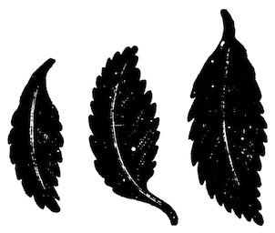
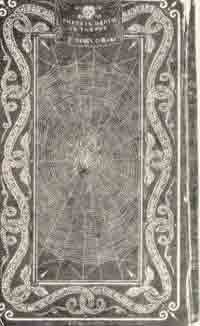
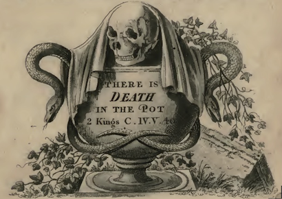
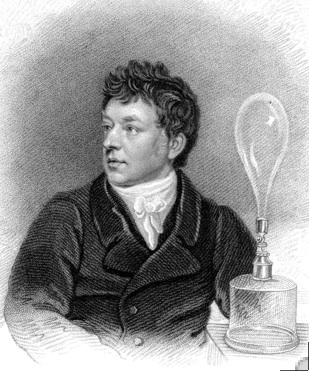
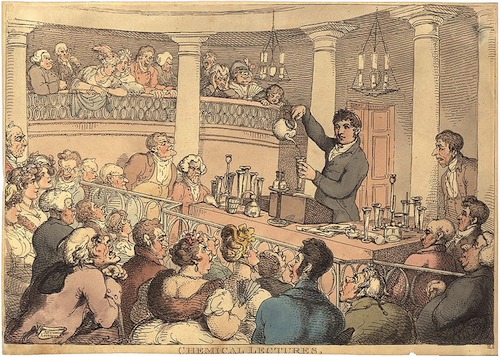

著者 フレデリック・アークム
専門化学者、ヨーロッパの主な芸術・科学アカデミーおよび学会の会員
緒言．
この本は表題が示すように、テーブル上で必須または贅沢な品物に分類される食べ物などへの不正な混ぜ物処理（adulteration）を簡単に見つけ出せるようにし、不注意な人たちでも健康に有害物が混じった商品に気づくようにしている。すべての人たちは、パン、ビール、ワイン、などの家庭で使われている物質にしばしば混ぜ物処理がなされていることを知っている。そして茶、コーヒー、パン、ビール、コショウ、その他の食品の混ぜ物処理をしたり偽造したことで多くの人たちが有罪になったことを今でも記憶している。
種々の生活用品を偽造し混ぜ物処理をする全く天才的な方法がこの国に入ってきて、その結果として市場の至る所に見せかけのものが存在し、あまりにも巧に作られているので経験の最もある裁判官さえも識別できないほどである。
しかし欲得ずくの商人たちがする可能性のあるすべての不正な取引と誤魔化しのうちで、最も罪が重くすべての正直な人たちに残念であり不愉快な気持ちを起こさせるのは、健康に悪い添加物を人間の食物に混ぜることである。有毒な添加物によって汚染された人間の食べ物が大衆に売られた多くの事実が記録され、このような食べ物を使ったために起きた悲劇的な事件が医学誌に記録されている。
熱心で飽くことのない金儲けへの渇望は禁止および懲罰に打ち勝ち、不道徳な商売人にとって同朋が犠牲になる可能性は二次的なものでしかない。
食物の混ぜ物処理をした個人の名前を明らかにするのは役所にとって不快なことかも知れないし、辛い義務かも知れない。しかし、私の言っていることの正しいことを示すにはそれを証拠だてる引用をしなければならず、私は議会の文書その他の公的記録を引用することにした。
この本をもっと有用にするために、ときには個人の家において種々の食品や食卓のための珍味を作るさいに気がつかないで事故または無知によって起きた物質的な誤りも指摘することにした。
不正手段を検出するのが私の目的であるが、そのために必要な実験を説明するのにさいして、化学に慣れない人でもできるような手技を示すようにした。そして一般的な使用のために不適当と思われる難解な科学用語を取り除いて、すべての必要な規則や指示を最も平易な言葉で表現するように意図してきた。
もしもここに与えた見解によって１人の読者がこの本の刊行された目的を追求したり、もしも預言者の息子たちとともに我々が警告して叫ぶ巨大な次のような悪を大衆の心中に刻み込むとしたら、この本の企画は完全に答えられたことになるでろう。
「鍋には死の毒が入っている」（列王紀下４：40）
このような悪い行為を廃めさせるためには社会のすべての階級が熱意をもって協力することが必要である。フレデリック・アークム
ロンドン．1820.
食品の混ぜ物処理
および
調理の毒物
食物の混ぜ物処理についての予備的観察
欲得づくの商人たちがしているすべての不正行為のうちで、種々の食べ物の誤魔化しほど非難すべきであり広く行き渡っているものはない。
この破廉恥で極悪の行為は程度が上がり見つけるのが困難になり、必需品または贅沢品に分類される殆どすべての商品に関連していて、連合王国のすべての部分に驚くべき広がりで行われている。
規模および事業の見かけの上において、社会的に最も醜悪でない人たちによって、このことがなされている。そして彼らの成功例は同じように邪悪な方針を行う大勢の競争者を小売商のあいだに生んている。
食べ物を混ぜ物処理するこのシステムは巧妙になされていて、種々の偽物の品物はあらゆる場所に見られ、もっとも経験を積んだ裁判官さえ区別できないように巧みに作られている。
家庭で使われている種々の物質のうちで現在もっとも一般に見られるのは、茶、コーヒー、パン、ビール、ワイン、蒸留酒、サラダ油、コショウ、酢、辛子、クリーム、その他である。
実際、混ぜ物処理をしていない食品を１つでもあげることは困難であるだろうし、真正の食品を手に入れることが殆ど不可能なものさえ存在する。
これらの偽の物質のあるものは食物として使ったときに比較的に害が無い。これらのあるものは高価な真正成分を安価なもので置き換えたのであって、このような混ぜ物処理は我々の財布に影響はするが健康には害を与えない。この種類のものには人工的なコショウや辛子、酢、クリームなどの偽物である。しかし、他のものは非常に有害である。これに属するものとして、ビール、ワイン、蒸留酒、ピックルズ、サラダ油など多くの混ぜ物入り食品がある。
専門化学者がいて、節操の無いポーターやエールの醸造業者に薬品や不正な物質を供給するのを本職にしている。他のものはワインや蒸留酒商人に同じような商売をしているし、さらに他のものは雑貨商や油商人を相手にしている。やり手は表向きでは正直で合法的な会社を表示していながら、主としてそのような過程を誤魔化しの会社の名前で秘密に行っている。
これらの非合法な商売は正式な取引のすべての秩序と方法を認めている。彼らは芸術および秘儀として別格として認められることを強く要求しているようである。彼らに雇われている使用人たちは、しばしば自分たちの手を通る物質の本態を知らず、最終的な利用目的を知らない。
調査による警戒を避けて税務官吏の詮索に打ち勝ち、これらの秘儀を秘密にするために、この過程は全く個々の技術者のあいだで巧みに分業および再分業され、生産はわざわざ違う事業所で行われる。使用する成分の釣り合わせはある１人の個人に割り当てられ、その成分および製造は別の全く違う部分として他の作業員に任せられる。製品の多くは偽装して消費者に送られたり、不注意な人たちに本態を気づかれないようにする。従って、ビールの不正な醸造者がポーターやエールに中枢神経の興奮性を与えるために使うコクルス・インディクス（Cocculus indicus：有毒物質ピクロトキシンを含む）は市場で黒抽出物（black extract）として知られていて、表向きには皮なめし業者や染色業者のためということになっている。これはコクルス・インディクスの実を水で煮て濃縮して得る黒い粘着力のある固まりで、原料である有毒な実にある麻痺および酩酊の性質を高度に持っている。カシア（quassia：ニガキ）の抽出物およびリコリス（liquorice：甘草）の汁からなる他の物質は技術の上ではマルタム（multum：増量剤）と呼ばれて、不正な醸造者はモルト（麦芽）およびホップを節約するのに使っている。
ビールの混ぜ物処理のためにこの国に輸入されるコクルス・インディクスの実および黒抽出物の量は膨大なものである。これは幾らかの取り扱い商人たちの手で重要な商売になっている。しかし不思議なことに税関官吏によってその利用方法について調査が行われたことはない。ビール、エール、蒸留酒の混ぜ物処理に使われる多くの他の物質は同じように国際的に偽装されている。そしてこれらを売っている人たちの中の多くはこれらの本態または成分を全く知らない。
醸造者用薬品店で1/2から５cwt.（cwt.＝約50kg）の大樽に入れて無害だと言って「にがり」（bittern）の名前で売られているものは、硫酸第一鉄（copperas：緑礬）、コクルス・インディクスの実の抽出物、カシアの抽出物、スペイン・リコリスからなっている。
上に述べた非常に広範な製造所において使われている、完全に無害であると云われているある種の混合物を専門的に一緒に検査を行った数多くの人による、このような所見を支持する証言を提出することは、非常に容易なことのようである。実際に私が専門の業務に捧げた長期間において、最高に尊敬できる非常に多数の商人たちが、完全に有毒な品物を自分自身は無害なものと思い、もしもその化合物が有毒有害であること、およびそれが使われる目的を知らされたら売らないであろうものを、お得意たちに売っていると確信する十分な理由を持っている。
例えばブランディ商人は、着色剤（flash）というまぎらわしい名前でいつでも買っていて、焦がした砂糖と透明ゼラチン（isinglass）だけからなっていると思っていた蒸留酒類を強くし透明にする抽出物質の形をしたものが、実際は砂糖にトウガラシ（capsicum）であることに気がつかなかったことを知っている。そして、トウガラシのヒリヒリとした刺激性の性質は上にのべた物質で色をつけるとブランディおよびラム酒の香りを高めていたことを知らなかった。
他の例としてエール醸造者は、エールに苦味と麻酔的な性質を与えるために前もってホミカ（nux vomica：毒物のストリキニーネを含む）およびカシアが混ぜてあったものを、粉にしたコリアンダーの種であるとして供給されていた。
辛子の小売商は、辛子の種を磨り潰しただけでは、売っている普通の辛子のように強く明るい色をしないことを知らなかったようである。真の辛子の粉は食塩と水と混ぜただけでトウガラシの粉を入れないと、ふつうに売っている辛子のように長いあいだ保存されないことを知っていなかった。
正しく尊敬すべき人たちによって行われている、他の多くの気がつかない詐欺の例を述べることができるであろう。
この国の産業を現在のような盛んな状態にした分業体制が、問題となっている不正直な行為を隠して盛んにする傾向をも同時に持っていることは、悲しい反映である。そして特にロンドンや帝国内の大都市において、これに応ずる種々の異なった商業の枝分かれがあることによって、混ぜ物処理をした商品の動きは多くの回り道を通っていて、その起源を追跡する非常に詳細な努力を拒んでいる。
生活の目的に役立つ化学が悪い商売に副次的に悪用されていることは嘆かわしくないことではない。しかし科学にとって幸福なことは悪用を検出する方法に容易に変更できることである。これをするためには非常に少しの技術だけが必要である。そしてこれをするための連続科目はこの後のページに記されている。
パン屋はパンの中にミョウバン（明礬）を入れてはいないと主張する。しかし、ある量の小麦粉を買うときには必ず、シャープ・ホワイト（ある量のミョウバンを含む小麦粉の名称）の１袋を買わなければならないことを知っている。これが無いと軽く白く空気を含むパンを半分悪くなった材料から焼くことができない。
小麦粉の卸商人は手持ちの変化して悪くなった小麦粉を売るためにしばしばこの偽物を買っている。この偽物の販売は人によっては違う商売に属している。
他の個人はパン屋にスタッフという曖昧な名前でミョウバンを食塩に混ぜたものを提供している。卸売の薬品製造者にはこの製品の性質を曖昧にするために、ミョウバンを食塩の結晶に適する結晶にするのを本職にしているものがいる。スタッフと呼ぶ混合物は小さな結晶にしたミョウバンの１部と食塩３部とからなる。多くの商売において同様な処理がなされている。ジャガイモは重さを増やすために水に浸す。
生活必需品に混ぜ物をする行為は体系的な正規なことになっているので、大衆の意見で他の商業行為と同じようにみなされ、以前に比べると以前ほど反感が無いだけでなく、そうして金持ちになるために認められる方法であると殆ど一般に考えられている。
このように公衆の福祉に反する行為にたいして刑法がもっと効果的に適用されないことは全く驚くべきことである。公道で人から数シリングを盗んだ男が死刑になるのに、遅く作用する毒を全社会に撒き散らす男は罰せられないで済む。
ある人はグレイト・ブリテンのように大きな経済システムでは大量の歳入が集められると都合が良いことを強調している。そして、従って法律の厳しさは問題である商品の大きさの程度に応じて緩められるべきである。大資本家とか歳入に重要な貢献をしている大きな醸造所とか蒸留所には、このように寄与している物品の質について、消費税が不正手段によって不利を招かない限り、厳しい詮索をするべきではない、と。
しかし憲法の原理はこのような特権を認めていないし、この国の真の利益はこれを廃止することである。誤魔化しに頼る税金はいくら良く見ても心もとないし、抑えることが出来ない知識の広がりによって早かれ遅かれ減少するからである。正しい政策は法律がすべての例において公明正大に行われることを要求し、もしも現在は知られていない悪徳にまで刑罰が広げられたら、疑いも無く歳入は豊かになるであろう。
ここで短く言及しようとするもう１つの誤魔化しは非常に広範に広がっていて政府の介入を大声で要求したいものである。これは医薬品の混ぜ物処理である。
調剤で使われる最も有効な薬品および化学物質の10のうちの９つは（＊始めは疑われないで）最後に疑われるような商人が売っている。キナ皮の中には真正のものに比べると質の悪いもののあり、この貴重な薬品を採集者たちはあまり区別をしないで好い加減に詰め合わせ、しばしば緑の革に入れて、半分分解し、他の植物その他の物質と一緒にしてスペインに到達し、よく知られていているように、このような状態で全ヨーロッパに売られている。
実用性の低下は殆ど無いかのように、しばしばマホガニーの鋸屑やオーク材を粉にして有効なキンキナに一定量を混ぜて、真のキナ皮として公衆に売られた。
このロンドンで幾つもの工場がいつでも動いていて、キナ皮を自然の状態よりもずっと安価に入手できることを、すべての薬剤師は知っている。最高の真正のキナ皮は平均して１ポンドあたり12シリング以下ではないが、大量のキナの粉は１ポンドあたり３-４シリングで薬局に提供されている。
ダイオウ（rhubarb）粉、吐根の粉、アンチモニー粉（James's powder）、その他の効力が強い単純および複雑な医薬品の贋物が驚くべく大量に邪悪な商売で売られていることもまた、悪評がある。実際にこのように混ぜ物をした医薬品の量は信じられないほどである。正しくも優れてもいないものであっても安いことが薬剤や医薬品の不道徳な業者にとって大きく望まれている。
よく使われている鹿角粉蒸留液（気付け薬：アンモニアを含む）、マグネシア（酸化マグネシウム：制酸剤、下剤）、カ焼マグネシア、甘汞（calomel）、その他の化学薬品を化学検査をすると、化学を知っている者には偽物であることが判るであろう。
鹿角粉蒸留液はそれに濃アンモニア水を加えることにより刺激性の臭いを高めて水を加えることができる。
混ぜ物をした抽出液にワイン・スピリット（アルコール）を加えると誤魔化しが検出される。もしもかなりの量の凝固物が起きないときには誤魔化しが証明されるからである。塩酸または硝酸を加えて激しい発泡が起きない鹿角粉蒸留液でこのこと（誤魔化し）が発見されるであろう。
マグネシアを調製するときに軟水ではなく硬水を使うと普通それによる石灰が含まれる。
マグネシアの純粋度を確かめるには、それの少量に少しの硫酸を加え、その全量の10倍の水で希釈する。もしもマグネシアが完全に可溶性であって溶液が透明であったら、それは純粋であると宣言して構わない。またはマグネシアの一部を塩酸に溶かして重炭酸アンモニア溶液を加える。純粋なマグネシアは溶けているだろうが、もしも石灰が存在するならば沈殿を生ずるであろう。
純粋なカ焼マグネシアに出会うことは稀である。これは普通のマグネシアと同じテストで測定することができる。これは希硫酸によって全く泡立つべきではなく、もしもマグネシアと酸を天秤の同じ皿に載せると、両者を混ぜたときに重量は減少すべきでない。しかしカ焼マグネシアは希硫酸で完全に溶けるほど純粋には得られない。普通には少量の不溶性残渣が残り、これらは主として調製に使ったアルカリからのシリカ土からなっているからである。大きく希釈した硫酸溶液はシュウ酸アンモニウム添加によって沈殿を与えるべきではない。
甘汞の真正さは、10部の蒸留水に1/32部の塩酸アンモニウムを加えたところに１部を入れて数分沸騰させることによって、確かめることができる。濾過液に炭酸カリウムを加えたときに甘汞が純粋だったら沈殿を生ずるべきではない。
実際に、最も普通にあり安価な薬品は不道徳な薬剤師の混ぜ物の手を逃れることはできない。例えばクロウメモドキ・シロップはクロウメモドキ（rhamnus catharticus）の実のジュースから調製するのではなく、ブラックベリーをつけるアルダー（ハンノキの類）やノイバラの実のジュースから作る。クロウメモドキの実、ブラックベリーをつけるアルダーやノイバラの実、は医療ハーブの商人たちによって公然と売られている。このような誤魔化しは実を開いてみると判る。クロウメモドキはいつでも種が４つであるのに、アルダーは２つであり、ノイバラは１つしか無い。クロウメモドキの実は白い紙の上で押しつぶすと緑色が得られるが、他のものでは得られない。
駆虫草（artemisia santonica）の代わりにヨモギギクの種、または両者の混ぜ物が売られている。
もっと高価なものから得られた精油でもしばしば混ぜ物がされていて利用価値がないし、混ぜ物処理を容易に検出することができない。粗雑な誤魔化しは実際のところ容易に検出できる。例えば、精油にアルコールを混ぜていると、水を加えたときに乳濁する。圧搾した精油だったら、アルコールは揮発成分を溶かして他のものを残す。テレビン油の場合には、その混合物に紙の小片を浸し、穏やかな熱で乾かすと、テルペン油はその臭いで正体を表す。しかし、もっと巧みな芸術家だったら、すべての検査に引っかからないような混ぜ物の方法を計画する。そして、すべての揮発性の精油は一般性質としてアルコールに溶け、沸騰水の温度で揮発する性質を持っているので、それらは互いにいろいろと混じり、安価なもので高価であるような誤魔化しをして、この前に述べたようなどのような試験によっても悪用を発見される可能性が無い。香料の専門家は、そのものの本質を認めることができる唯一の確かな試験は香りと味であると主張している。例えば木の皮がすべての点で良いシナモンの外見をしているときに、これが疑いもなく真正のシナモンの木の皮であることを証明するとしよう。しかしシナモンの香りが無いかまたは程度が低いとしたら、我々は受け付けない。このことはシナモンの精油についても同じである。薬そのものまたはその精油が真正であると結論するのは、使用と習慣、または既知の性質の試料と比較によっている。
薬屋が売るクズウコン澱粉（＊アロールート澱粉＝矢の根デンプン）すなわち Maranta arudinacea のデンプンの大部分はジャガイモ澱粉とクズウコン澱粉の混合物である。
同じ混ぜ物処理のシステムは種々の商売や製造で使われる物品に及んでいる。例えばリネンのテープやその他のこの種の家庭で使う商品はリネン線維だけでなくリネンと木綿から出来ている。色素は芸術家が使うウルトラマリン、カルミンおよびクリムソン・レーキ；アントワープ・ブルー、クローム・イエロウおよびインディアン・インク；だけではなく、普通のペンキ屋が使う粗野な色素もあるていど混ぜ物処理をされている。従ってペンキ屋の色素でも、鉛白（塩基性炭酸鉛）にはバリウムの炭酸塩や硫酸塩が混ぜられ、バーミリオン（硫化水銀）には鉛丹が混ぜられている。
しばしば家庭で使っている石鹸はかなりの部分をコーンウォール（イングランドの南西部）の聖ステフェンスから持ってきた細かい白粘土で置き換えられている。印刷用紙の製造には製品の重さを増やすために大量の焼き石膏（plaster of Paris）が紙の材料に加えられている。しばしば布のへりは永続的な色素で染められ、一時的な色素で染められたへりに巧妙に縫い付けられる。革の鞣しや刃物および宝石の製造で行われる巧みな誤魔化しは信ずることが出来ないほどである。
不道徳な現在の製造者たちの目的は、質とは無関係に、可能な限りの時間と労働を節約して、製造する物品の量を増やすことである。私利私欲の仕組みと忍耐は、禁止に対処し、最も活発な政府による警戒を避ける計画を、証明している。
金儲けへの熱心で飽くことのない渇きは今日の主要な特徴のようであり、すべての人類の能力を働かせ、抑えられない衝撃を発明の力に与え、そして金もうけが支配原則になると、仲間の生命が犠牲になる可能性も二次的に考えるようになる。生存のために必要であり楽しみである殆どすべてのものの悪化に関して、市民として、および宗教的な意味において、「われら、生のさなかに死に臨む（＊埋葬の際の祈祷文）」状態である。
家庭で使われる種々の水の効果およびその純粋性を確かめる方法
土地の窪みから出て泉、井戸、川、湖を形成する水がしばしば実質的に味などの明白な性質で互いに違うことを確信するのに、あまり考え込む必要は無い。家庭の目的や技術において使われる水に違いのあることを観察しない人はほとんど居ない。そして硬水と軟水の違いを全ての人はよく知っている。
自然において完全に純粋な水には殆ど出会うことが無い。
家庭の健康と安心感および家庭生活の便利さは良質で健全な水の供給によって実質的に影響されていることは、明白に違いない。従って、生活の普段の用事で使っている種々の水の質および健全さは、我々が食物を作るのにあたって毎日大量に使っているので、疑いなくかなり重要な対象であり、我々の注意を要求する。
水に含まれる異物の効果は、最初に考えられる以上に注目に値し重要性が大きい。硬水で土地の物質を含んでいるような水は人体の重要な機能のあるものに疑いの無い影響を持っている。このような水は当惑する不平と普通に呼ばれている、彼らに作用している苦しい症状を増やしている。塩類および土地の物質が多い水を使っていると常に重篤になる多くの苦しみもこの中に入るのであろう。
ある技術や産業で使われている水の純度は少なからざる重要性をもつ対象である。ビールを醸造する過程において軟水は硬水よりも好ましい。軟水を使うとモルトの抽出可能な最大の量が最小の可能な時間で得られることを全ての醸造家たちは知っている。
染色業者の技術において硬水は幾つかの染色溶液の作用を妨害するだけでなく、繊細な色のあるものの自然な色合いを変えてしまう。あるときに硬水はそれに充満している土地の物質および塩類を材料の繊細な線維に沈殿させ、このようにして染料の柔らかさおよび華やかさを邪魔する。
漂白業者はアルカリ土類の多い水を有効に使うことはできず、微量の鉄は布地を黄色くする。
画家の絵の具の製造者にとって可能な限り純粋な水は幾つもの繊細な色素を作るのに絶対的に必須である。カルミン、マッダーレーキ（アカネの根から作る赤紫色素）、ウルトラマリン（群青）、インディアンイェロウ（オレンジイエロー）は完全に純粋な水がなければ作ることはできない。
亜麻線維を浸すのに軟水は絶対的に必要である。硬水中で線維は組織の傷害が起きるまで何月も浸すとしても木質の物質が分解して線維が適当に分離しない。
料理の技術においてあるていど純粋な水の影響は同じように明らかである。良い純粋な水は硬水と呼ばれるものよりも動物の線維および野菜の物質を容易に柔らかくする。すべての料理人は乾いた熟したエンドウ豆やでんぷん質の種は硬水中で煮ても柔らかくできないことを知っている。それは種のでんぷんは土地の塩類が多い水の中で完全に可溶性にならないからである。
緑色の野菜の物質は軟水で煮ると硬水で煮るより柔らかい。しかし硬水を使うと色が良くなる。硬水と軟水の影響は次に述べる
[実験] 茶葉の２つの部分を、全く同じ過程で似た別の容器に入れ、一方には硬水を入れ他方には軟水を入れて、高温でも低温でも良いが茶葉をふやかすと、軟水に漬けた方はずっと味が強いが、硬水に漬けたのに比べて色が薄い。硫酸鉄の溶液を加えるともっと強い黒色になりもっと沈殿が増加する。動物のジェリー溶液を加えると、軟水は同じ条件における硬水よりも茶葉からもっと多くの褐色物質およびもっと多くの没食子酸を抽出することを直ちに示す。
軟水を飲むのに慣れた多くの動物は硬水を拒否する。特にウマは軟水を好む。ハトは軟水に慣れさせると硬水を拒否する。
良質な水の性質
家庭で利用する目的のための水の純度の優れた基準は硬度が低いことである。この性質はその水で手を石鹸で洗うことによって簡単に判る。良質の水は美しく透明であるべきであって少し濁るのは他の物が入っていることを示す。水が完全に透明であることを判断するには、ある量の水を深いガラス器具に入れて、かなりの量の液体を垂直に見下ろすことである。そうすると水をコップに入れて光と目のあいだに置くよりも軽度の濁りを簡単に見つけることができる。水は完全に色が無く、臭いが無く、柔らかく気持ちの良い味であるべきである。柔らかいパルスで沸騰し、石鹸によって、何時間たっても分離しないような均一の乳白色の液体になるべきである。
ふつうの水の味およびそれが動物や野菜に良いのは大気と炭酸が存在することによっている。もっと空気を含んでいる泉の水は川の水よりも活き活きとした味を持っている。
従って沸騰させたばかりの水が生気の無いというか気の抜けた味であるのはこれらのガスが追い出されてしまったことによる。魚はこのように弾力性がある流体（＊＝気体）が無くなった水では生きていることができない。
このロンドンの一部に供給されているニュー・リヴァー（＊テムズ川支流のリー川からの運河）の水の100立方インチは2.25の炭酸と1.25の空気を含んでいる。テムズ川の水はもっと多くの空気ともっと少量の炭酸を含んでいる。完全に空気で飽和していない水をこの弾性がある流体とともにかき混ぜると空気の一部は吸収されるが大気の２つの主なガス成分である酸素と窒素は同じ割合で影響されることはない。前者の酸素は後者の窒素に比べて優先的に吸収されるからである。
ドルトン氏（＊1766-1844：原子説を化学に導入し、倍数比例の法則および混合気体の分圧法則を発見）によると、水を窒素79と酸素21からなる大気とともにかき混ぜると、79/100の1/64すなわち1.234/100の窒素ガスおよび21/100の1/27すなわち0.778/100の酸素ガス、全量で2.012/100を水は吸収する。
水は蒸留によって異物を除去される。そして正確さが必要な化学過程には蒸留水を使うべきである。
一般に部分的ではあるが重炭酸カリ溶液を滴下することによって硬水を良質にすることができる。また硬度が石灰の重炭酸塩＝炭酸水素塩の存在だけによるとき（＊一時硬水）は、単に沸騰によって非常に良くすることができる。（＊石灰水＝水酸化カルシウムに二酸化炭素を吹き込むと炭酸カルシウムが沈殿する。さらに吹き込むと可溶性の炭酸水素カルシウムになる。）一部の炭酸が飛び出して石灰の中性塩が底に沈む。この水は石鹸を殆ど凝固させることなく洗濯に使うことができる。しかし硬度が部分的に石灰の硫酸塩によるときには沸騰によって軟水にすることはできない。
泉の水を洗濯に使うときには表面が広い貯水場でしばらく大気に曝すと良い。このようにすると炭酸の一部は消散して石灰の炭酸塩の一部は底に沈む。ドルトン氏の観察によると、泉の水を汲みだせば汲み出すほど水は硬度が低下する。
家庭および芸術で使われる水の化学的性質
雨の水
雨の水は雲から落ちてくるのをあらゆる注意をし、大きな町と言うか大気に異物を加えるであろうすべての物から距離を置いて、集めると多分どのような他の自然水より純粋な状態に近い。しかし、これらの状態で集めても、その水には大気および炭酸ガスの一部を含んでいる。雨水の比重は蒸留水に殆ど同じであり、普通に含まれている異物の割合が低いので、非常に硬度が低く、多くの料理目的、製造業や技術の種々な過程にみごとに適している。
雪の水
降ったばかりの雪は空気が接触しないようにして溶かすと空気をほとんど含んでいない。しかしゲイ・リュサック（1778-1850）およびアレキサンダー・フォン・フンボルト（1769-1859）は、殆ど普通の割合で空気を含んでいることを確かめた。
融けた氷の水はそれほど空気を含まない。露は空気で飽和していると考えられてきた。
雪の水はアルプス渓谷の多くの住民におきる頚の瘰癧様の腫脹の原因と汚名をきせられていたが、この意見は証拠がある明白な事実によって支持されておらず、完全に否定されたとは言えないが、氷や雪を見ることがないスマトラ島でしばしば起きることから、ますます可能性が低い。
北の高緯度のところで雪が融けた水は住民たちの冬期の普段の飲水である。そして極地の海に浮かんでいる膨大な氷の固まりは海員たちへ新鮮な水を供給している。
泉の水
泉の水には大地の表面より下の深いところから出る井戸水などが含まれ、源泉の場所において使用されたり、少なくとも空気に暴露してかなりの距離を流れる前に使用される。実際のところ、泉は大地の裂け目を通ってきた雨水であり、地面の下り勾配で底に集まり、改めて表層に上って泉や井戸になったもの、と考えることができる。井戸はその源が土地表面からあるていど深いところにあって外気の影響よりも下にあるので、それらの温度は一般に季節の移り変わりのあいだに均一であり、大気の温度よりも常に数度低い。それらの温度は流れでる地層の性質に従って異なる。何となれば水の中の成分はふつう大きく性質を変えないほど微量であって、普通の目的のために水は不適当でなかったが、本性をかなり変更させた。従って、含まれている成分の本質および程度によって、ある泉の水は硬水であり、あるものは軟水であり、あるものは甘く、他のものは塩辛い。
普通の泉はその異成分が多くなったり、普通のものではなくなると、気がつかないうちに鉱泉または医用泉になる。時には普通に泉の水に存在する成分が無いのに医学的に有名になることがある。例えばモルヴァン泉（イングランド西部の保養地）はその例であり、殆ど純粋な水である。
殆どすべての泉の水は種々の程度の硬度を持つ。この性質は主として石灰の炭酸塩または硫酸塩、または両者の存在に依存している。そしてこれらの土地の塩類の量は例によって非常に大きく変化する。ドルトン氏によると2000グレインの水に１グレインの石灰硫酸塩を入れると普通に出会う泉の水の最高のものに変化させる、とのことである。
深い井戸の水は井戸の口から溢れ出る泉の水よりもふつう硬度が高い。しかしこの規則にはある程度の例外がある。
最も純粋な泉は始原期の岩や砂利の床から出たり、砂または石英質の層を濾過されたものである。一般に大きな井戸は小さなものよりもより純度が高い。そして古い井戸からは新しいものよりも良質の水を得る。水が地中の経路を濾過される間に可溶性の部分が洗い流されるからである。
川水
川の水とは大気に曝されて常に開いている経路を流れている流れや小川に使う名称である。これは泉の水から始まって大気に曝されることによってずっと純粋になり、土地や表面水が加わって沖積層の土地の粒子によって濁るが、それ以外の点では非常に純粋である。これは一般に硬度が低く泉の水よりも大地の塩類が少なく、ふつう大気や炭酸ガスを少ししか含まない。なぜかと言うと長い流れとして揺られ、大気の温度に曝されることによって炭酸ガスの一部が放出され、溶けている石灰は部分的に沈殿し、それによって水が軟水になる。それによってその比重は低くなり味は不快なものではなくなるが、新鮮な楽しいものではなくなる。そして硬度が高い泉の水から軟水を必要とする大部分の目的に充分に純粋な流れがしばしば得られる。
このロンドンでニュー・リヴァーの水と呼ばれている水は、小量の塩酸石灰、炭酸石灰、および食塩を含んでいる。
しかし清潔なシリカの床から出て砂や小石の経路を通った流れははじめから驚くほど純粋である。例えばウェイルズの岩石地帯の山の湖や小川、ディー川（北スコットランド）の美しい水の源、すべての渓谷の窪みを流れる無数の小川、がそうである。スイスは水の純粋さと優れていることで昔から有名であり、この水は山々から豊富に流れでてヨーロッパの最高の川になっている。
しかし川のうちには岩の多い土地から出るのではなく、実際に最初はかなりの異物を含んでいて、長いあいだ豊富な耕作された平野を流れているあいだに塩類の成分について非常に純粋になるものがある。しかし動物質や野菜物質で汚され、これらは真の溶液になるよりはむしろ懸濁している。テムズ川の水はこのようなものであり、ロンドンで干潮線において水を汲むと非常に硬度が低く良質であるが、そして静かにしておくと有害に見えるものまたは製造業の邪魔になるものは非常に微量にしか含まれていない。これはまた海産物店に非常に良く適している。しかし木の樽に保存するとかなり明らかな変化が起きる。海へ持って行くとテムズ川の水ほど早く腐るものはない。しかし海軍は木の桶の代わりに鉄のタンクを使うようになってこのように不利なことを除去できるようになっている。
テムズ川の現状および何マイルも岸に沿って多くの人が住んでいることを考えると誰でも、あらゆる種類の動物性の物質が共同の下水によって流れ込んでいることに気がつくであろう。海において起きていることが良く知られている腐敗、および炭化水素や硫化水素が、この水から出ることにこれらの物質が部分的の原因であることは疑いない。１月か２月後で木の桶を開くと、かなりの量の炭化水素や硫化水素が逃げ出し、水は黒くほとんど我慢できないほどひどい。しかし、これを絞りとって大きな土器に入れて空気に曝すとかなりの量の黒い粘った泥が沈殿して、水晶のように透明になり、極めて甘く美味になる。
一見、テムズ川の水は大きな都市の下水、排水路、水路のすべての内容を受け取っているので、それによって異物が入っていて非常に不純になっていることが予想される。しかし、これまでなされた最も精密な検査によると、非常に大量であり干満の作用によって絶えず動かされているこの大量の水の健康への性質に、これらの異物は認知できる影響を持たない。
しかしテムズ川の水に微量な動物質が検出されるであろう。もしも鉛の硝酸塩をテムズ川の水の中に滴下すると、「水はミルクのように濁って白い粉が底に沈み、これは硝酸の中で泡立ちせずに溶ける。従って（トムソン博士によると）これは鉛の酸化物と何か動物質の結合によるものである。」
公共水に含まれる物質とその検出法
公共水の一般的性質についての知識を得るためには、予期される物質が存在するか無いかを簡単に示す、幾つかの化学検査だけが必要である。
公共水に含まれている塩は殆ど限られていて、ナトリウム、カルシウム、マグネシウムの炭酸、硫酸、塩酸の塩である。そして時に非常に少量の鉄が検出される。
[実験] ワイン・グラスに蒸留水を満たし、それに数滴の石鹸アルコール溶液を加えても、水は透明のままであろう。
この実験は水中に土地の塩が存在することを示すのに用いられる。従って蒸留水または完全に純粋な水に混ぜると変化は起きないだろう。しかし、土地の塩を含む水に加えると白いふわふわとした物が分離され、それは急速に液体の表面に集まる。さてこの実験に使用する水の量を等しくすると、ふわふわした物の量から家庭で使う普通の目的の水の硬度について、まあまあの程度の見解を得ることができるであろう。このことは次のように明らかになるであろう。
[実験] 幾つかのワイン・グラスに種々のポンプまたは井戸の水を満たし、それぞれのグラスに数滴の石鹸のアルコール溶液を加える。すぐに濁りが起きて、混合液を静置しておくとふわふわした物は溶液の表面に集まる。ふわふわした物の量は水中に含まれる土地の塩の量に比例するであろう。
この検査は水中にある土地の塩類の化学的性質を区別できるものでないことは明らかである。ここで示すのは硬度とふつうに呼ばれている水の性質を引き起こしている種類の物質があるかないかを示す役にだけ立つものである。この硬度は常に土地の塩基の塩である。
もしも水中にある種々の酸や土地の性質を知りたかったら、次の検査を行う。
[実験] ワイン・グラス半分の水に約20滴の蓚酸アンモニア溶液を加える。もしも白い沈渣が起きたら水にはカルシウムがあると結論する。
この検査によって24,250グレインの水中にある１グレインのカルシウムを見つけることができる。
もしもこの検出において、沸騰させて冷やした水ではなくて、ポンプまたは泉から汲んだばかりの新しい水のときには、白い沈渣を生じ、さらに過剰の炭酸を加えると石灰は溶解する。そして沸騰させて濃縮された水で沈殿が作られ続けるならば、石灰は（＊炭酸ではなく）固定酸と結合していることが確かである。
[実験]鉄の存在を検出するにはワイン・グラス１杯の水に没食子の24時間抽出液を数滴入れる。または没食子を24時間のあいだ水に浮遊させる。そうするともしも鉄が存在するならばその水は青黒くなる。
[実験] ワイン・グラス半杯の検査しようとする水に数グレインの塩化バリウムを加える。濁りを生じて、数滴の塩酸を加えてもこの濁りが消失しなかったら、硫酸の存在が明らかである。
[実験] 硝酸銀溶液の数滴を入れると水が乳濁し、これに大量のアンモニア水を加えて消失すると、塩酸を１成分とする塩が水にふくまれると信ずる理由がある。
[実験] 石灰水またはバリタ水（酸化バリウム水）が沈殿を起こし、塩酸を加えることによって再び消失するならば、炭酸がその水に存在する。
[実験] 前もってアンモニアの中性炭酸溶液を加えた後で、リン酸ナトリウム塩溶液のほぼ同じ量が水に乳濁を起こしたら、マグネシア（＝酸化マグネシウム）の存在を考えることができるだろう。この検査は次のようにすると最高に行われる。
検査する一定量の水を全量の1/20に濃縮し、ワイン・グラスの約半分の中に、５グレインのの中性炭酸アンモニア溶液を滴下する。マグネシアが存在するとしても沈殿は起きない。しかし同量のリン酸ナトリウムを加えると魔がネシアは不溶性の塩として沈殿する。炭酸アンモニアは中性であることが重要である。
この検査法は最初にウラストン（物理学者、化学者1766-1938：医者としてはシスチン結石の発見者）によって示唆された。
水に弱く結合している酸素ガスは次のようにして発見される。
[実験] バイアルに水を満たし少量の硫酸第一鉄を加える。もしも水に酸素ガスが完全に存在せずバイアルは蓋がよくされていて水が完全に上まであったら、溶液は透明である。もしもそうでなかったら溶液は軽く濁り鉄の酸化物から酸素を引きつけ、その少量がこの高度に酸化された状態で酸を残して沈殿する。またはドリーセンが指摘したような方法で、水をフラスコ内に満たし口を水面下のおいて、沸騰させた容器に２時間ほど沈めて沸騰させる。このフラスコを水銀の中で逆さにし、フラスコの側面に泡がつかないようにして、リトマス溶液で薄く（＊青く）色が付くようにして少量の窒素ガスを導入する。もしも酸素ガスが水から充分に追い出されていたらリトマスの青色は変化しない。しかし、もしも酸素が存在したら、すぐに赤くなる。
もしも生活の普通の目的に使う違う種類の水を調べて上に述べた検査で判断するとしたら、それらの水は互いにかなり違うことに気がつくであろう。あるものは多量の食塩および土地の物質を含み、他のものは殆ど純粋である。これらの違いは水が多くの物質に作用する大きな溶解性によっている。井戸は決して煉瓦で覆ってはいけない。煉瓦は軟水を硬水にする。もしも煉瓦を使うならば地中に固定してセメントで覆わなければならない。
公共水にふつう含まれる種々の物質の量を確かめる方法
水に含まれる土地の物質および塩の量を確かめるには以下の方法が最も簡単で容易である。
[実験] 一定の測定した量の水を既知の重量の白金または銀の蒸発皿に入れ、180度（摂氏82度）蒸気浴上で殆ど乾燥するまで水を蒸発させ、最後に蒸発皿を砂浴に移して、物質を完全な乾燥状態にする。白金蒸発皿の重量は既知なので注意深く測定すれば良い。水中にある固体の塩が付着していたら、重さの増加分は水中にある固体物質の量である。
得られた塩がもともと溶けていた量の蒸留水を塩の上に注ぐ。もしも塩がこの水に全て溶けたらこの塩物質は水を蒸発させるときに変化していないと信じてよい理由がある。しかし普通は一部が溶けないで残るが、その場合には、蒸発させることによって塩の一部が相互に変化して、蒸発させる前にはもともと水の中には存在しなかった塩類が形成されたと結論してもよいだろう。
これまで公共の水に入っているのは殆ど炭酸、硫酸、塩酸のナトリウム、カルシウムおよびマグネシウムの塩に限られ、時には非常に微量の鉄が含まれていると述べてきた。（p49）に方法を述べたように、存在する種々の酸および塩基を確認したので、それぞれの相対的な重さを容易に確かめることができる。
次のマレー博士による手法は、水その他を充分に正確に分析する方法であり、実施は容易である。与えられた量の水にある塩類の重さが決まると、次のような方法でその正確な分析に進むことができるであろう。
[実験] 一定量の水（500とか1000立方インチ）を計り、ガラスをはめない開放の容器の中でゴミが入らないようにしてゆるやかに蒸発させて最初の容積の1/3にする。それからこの濃縮した液を等量の３部分にわける。
[実験] 第１の部分に塩化バリウムを滴下し、沈殿を洗い、集め、白金箔の上に載せて赤熱で乾燥させ、重さを測る。それを硝酸で消化し、乾かし、再び重さを測る。重量の減少は沈殿に含まれる炭酸バリウムの量を示す。残りの重量は硫酸バリウムである。水の中の炭酸は炭酸バリウムの重さの0.22に等しい。硫酸は硫酸バリウムの0.339である。
[実験] 濃縮した水の第２の部分に硝酸銀を入れて沈殿させ、沈殿を洗い、前もって重量を測定しておいた白金箔の上に融合させる。塩化銀が融合した箔の重量を測ることによって沈殿の重さが確定するであろう。この1/4の部分の重さは沈殿に含まれる塩酸の重さに相当する。
[実験] 濃縮した水の第３の部分に蓚酸アンモニアを加えて沈殿させる。沈殿を洗い乾かす。それを白金箔に載せるか白金のカプセルに入れて赤熱する。その上に希硫酸を加える。しばらく消化して、次いで乾燥するまで水を蒸発させ、カプセルにかなり強い火を作用させ、最後にこのようにして得た硫酸カルシウムを秤量する。その重さの0.453は水から沈殿した部分のカルシウム量を示す。
[実験] カルシウムを除いた同じ第３の部分の水に中性のある量の炭酸カルシウム溶液を加え、次いで沈殿が出来るまでリン酸を滴下する。沈殿を洗い。乾かし、白金カプセルに入れて赤熱に曝す。これはリン酸マグネシウムであり、この塩の重さの0.357がこの水の中のマグネシウムに相当する。
[実験] もしも水に少量の鉄が含まれるならば、前に述べた３つの部分に相当する量を取って安息香酸アンモニウム溶液を混ぜる。沈殿を洗い、乾かし、赤熱に曝し、秤量すると、その重さの9/10は水に含まれている酸化鉄の重さである。
このようにして水に含まれる全ての物質の量をナトリウム意外は確かめることができた。ナトリウムの量を知るにはマレー博士の指摘した次の方法がよく答えてくれる。
[実験] 一定部分の水を全量の３分の１まで濃縮する。過剰に入れ過ぎないように注意して塩化バリウムを加えて炭酸および硫酸を沈殿させる。
蓚酸アンモニウムを加えてカルシウムを、炭酸アンモニアとリン酸でマグネシウムを沈殿させる。次いでこのようにして得た液体を乾燥させる。ある量の食塩（普通の塩）残る。これを赤熱に曝す。その重さの0.4が使った水の中のナトリウムである。0.4のナトリウムはソーダの0.53に対応する（＊意味が判らない）。
家庭で使われている水にしばしば他の物質の入っていることを述べる必要は殆ど無いであろう。細かく割れた砂は普通の組成であり、これは異なる状態で容易に得られる。一定量の水を蒸発させて乾かし、残った塩分を蒸留水に再び溶かす。石英質の砂が溶けないで残り、酸類に溶けず、吹管の前で炭酸ナトリウムと一緒に透明なガラスに容易に融け込む。
家庭で使う水を鉛の容器に入れて置くことの有害な作用
胃に入ったときの鉛の有害な作用は現在では一般に知られているので、この危険な傾向について論ずることは全く不必要と思われる。
2000年前に古代人はこの金属の危険な性質を今日の我々と同じように知っていて、実際にその作用をもっと理解していて、家事への使用に慎重なようだった。
彼らの用心はしばしば不必要な程度まで行われたようである。このことは当時における実験知識が不完全なために当然であった。毒物の検出ができないときには、水を使うのにこのように慎重であったのは正しい方向への誤りであった。
これに対して近代人は、基礎的に誤まった確信および作用を注意深く続けて試していないことから、逆方向への誤りに落ちこんでいる。
食物や飲み物に使おうとする水を鉛の水溜めに保存するのは極めて適当で無いことは疑いが無い。そして空気を除いているときに純水は金属鉛にはっきりとは作用しないが、空気が入るとこの作用は明らかになり、あまり注意深くない観察者でも気がつくようになる。
鉛の水槽に保存した水の表面に白線を見ることがある。これは鉛が水に触れた部分であり、空気が入ったときに鉛から作られた鉛の炭酸塩の部分である。この物質は胃に入ると健康にとって高度に有害である。これこそ古代人が水道に鉛のパイプを使わなかった理由であった。このような水の沈殿を飲み込むと消化管の傷害を起こすことに気がついていたからである。
古代に鉛の水槽はヒポクラテス、ガレノス、ウィトルウィウス（紀元前１世紀のローマ建築家）により危険であると非難された。これに加えて鉛の水槽に残っていた水による全家族の中毒の不幸な例を引用したファン・スヴィーテン（1700-1772：ブールハーフェの弟子）、トロンヒン（1709-1781：ブールハーフェの弟子）、その他の観察にさらに頼ることができる。ジョンストン博士、パーシヴァル博士、ジョージ・ベイカー卿、ラム博士は鉛が入った水を使って起きた危険な病気の数多くを同じように記録している。
飲料に適した水によっては鉛を溶かす能力が異なっている。ある場所では所有者が絶えず修理をしなければならないので、鉛のポンプは使われなくなった。ある井戸の所有者が修繕費を節約するために水道屋にポンプの鉛を普通の２倍の厚さにするように注文した例をラム博士が述べている。これは彼の言葉によると水が非常に硬いので鉛をすぐに腐食させるからだそうである。
次の例はジョージ・ベイカー卿が語っている。
「ある紳士は子供が多く21人も居て、そのうち８人は若死をし13人は両親よりも長生きをした。彼らが子供のとき、およびふだん住んでいる場所を離れるまで彼らは極めて不健康であって、とくに胃腸の具合が悪かった。父親は長年にわたって麻痺状態であり、母親は長期間にわたって疝痛と胆管閉塞で苦しんでいた。」
「両親が死去した後で家族は長いあいだ住んでいた家を売り払った。購入者はポンプの修理が必要なことに気がついた。ポンプは鉛で作られていて、検査すると腐食が激しくてバケット（ポンプの吸い子）が通るシリンダーには幾つかの孔が空いており、水槽の上部は普通のハトロン紙の厚さであって篩のように沢山の孔が空いていた。」
私自身も鉛の水槽が接触している水の作用によって完全に腐食している数多くの例を見ている。そして職業上で数多くの同様な例を経験したと述べられない水道屋は１人も居ないであろう。
私はしばしば中に入っている水の作用によって漏れるようになった鉛の水槽を調べるように依頼されてきた。そして屋敷の所有者と水槽に欠陥があると告発された水道屋のあいだの争いを調停する法律論争の例を私は引用することができる。しかしこの例は鉛にたいする水の化学作用であることが示された。大量の空気と炭酸を含む水はいつでも金属鉛に強く作用するものである。
自然の状態では鉛に作用しない水も、偶然に受けた外的な物質によって、鉛に作用するようになることがある。木の葉のような植物物質が水の入った鉛の水槽に落ちると、その水は自然状態では持たないかなり強い鉛を溶かす作用を持つようになる。従って鉛の水槽は清潔にしておく事が必要である。そしてこのことは偶然にも不純物に曝されていればいるほど、必要である。トロンヒンが記載した有名なアムステルダム鉛疝痛はこのような状態で起きたものであった。それからまたファン・スヴィーテンが記載したこのような水槽により一家全体が同じ症状を呈したのも同様であった。ダンカン博士が記載した病例は水の溶解能力よりは水槽の不潔によっているのであろう。この例において定期船の高級船員たちは飲料および調理に鉛水槽の水を使ったが、水夫たちは同じ水源の水を木製の容器に入れていた。その結果、高級船員には疝痛の発作が起きたが、水夫たちすべては健康であった。
これらのことについてラム博士が正しくも言ったように、多くの人類の不注意さは「あまりにも大きくて、何回も何回も繰り返すことが全く不必要になっていない。」
鉛の水槽に入っている水を毎日使っている大部分の人たちははっきりとした傷害を受けてはいないが、見かけ上に健康なのは反応が非常に遅いこと、および摂取量が少ないからでもあろうし、その効果は原因の違いや体質の違い、そして個人による病気にたいする素因によって変化する。不純物を含む水を使う多くの人たちに想定される安全性は、個人の利益を考えての仮定以上のものではなく、このことは経験によって確認されるかも知れないし、されないかも知れない。
ある習慣を区別する病的な感受性の印象とは独立に、人体の本質的な性質には多くの違いが別に存在するのだろうが、それについて我々は全く無知である。
各個人の病気にたいする感受性すなわち傾向はその個人に独自であると考えなければならない。他人の経験を信頼することは後になって誤であることが判る安全性の基礎かも知れない。そしてこの危険はその源を無くすることによってのみ確かに予防することができる。そして環境が異なり年齢が異なることによって種々であり複雑な変化をする人間の体質を考えると、ある時期に身体に取り入れられた物質が、ある時期および何年にもわたって無害であったにも拘わらず、ついに他の時期には病気および死の原因になるであろう。
ある１人の経験、または数が多くても多数の人の経験は、この本性の問題の解決には全く役立たない。
「蒸留酒の不節制な使用の悪い影響は、習慣的な酒飲みが良い健康状態を保ち老年に達しているのをしばしば見るからといって確かでないとは言えない。同じことはあらゆる種類の悪徳に溺れる人たちについても言えるだろう。彼らの多くは悪い習慣にも拘わらず活力ある老年に達している。」
これらの発言を確証するために、鉛で汚染した水の効果についてのＧ．ベイカー卿の次の発言を提出しよう。
「この主題について私の記憶に残っている最も顕著な例はサセックスのアシュバーナム卿の家族の例である。ここにはかなり遠くから泉の水が鉛のパイプで供給されていた。この結果として、卿の召使いたちは毎年に疝痛によって苦しめられ死んだ者もいた。バトルの名医はこの問題について私に連絡し数ガロンのその水を送ってきて、ヒギンズ博士が分析して普通以上の量の炭酸が含まれていると報告した。そしてその中には鉛が存在し、彼はこれが炭酸によるものであるとした。この結果としてアシュバーナム卿は鉛のパイプを木製に置き換え、その時以後に彼の家族は腸に何の病気も無くなった。」
リッチモンド、1802年９月27日
公共水に含まれた鉛の検出法
鉛を検出する最も高感度の検査の１つは硫化水素の気体を含ませた水である。これは非常に微量の鉛を含む液体を瞬間的に茶色または黒っぽい色にする。
この検査は非常に高感度であって、蒸留容器内で鉛のパイプによって凝縮させると、蒸留水はこのことによって影響される。この検査の作用を示すには次の実験が役に立つであろう。
[実験] 蒸留水の入ったワイン・グラスに硫化水素を含む同量の水を入れる。何の変化も起きないだろう。しかし1/4グレインの酢酸鉛（市販の鉛糖）または他の鉛標品を入れると、混合液は瞬間的に褐色の濃い色になるだろう。
この検査を行うのに被験水の１容にたいして単に硫化水素を含む水の同量を混ぜれば良い。又はもっと良い方法として大量、たとえば１ガロン、の水を半パイント（パイントは1/8ガロン）まで濃縮（16倍）して検査を行う。
この検査を行うもっと能率のよい方法は、次のように被験水に硫化水素の流れを通過させることである。

[実験] 図に示すように、瓶（ａ）またはフローレンス・フラスコ（普通のフラスコ）の口に、直角に（＊コの字に）曲げたガラス管（ｂ）を挿し込んだコルク栓をつけ、管の一方を検査する水が入ったバイアル（ｃ）に漬ける。次にエンドウマメの半分に割った市販硫化アンチモンの１容をフラスコに入れ、その上に４容の普通の濃塩酸（市販の食塩スピリット）を注ぐ。硫化水素の気体がこれらの物体から充分に放出され、バイアル（ｃ）内の水を通過する。ガスの放出を約５分のあいだ続ける。もしも非常に微量の鉛が存在したら、水は暗い茶色または黒っぽい色になる。静かに熱することによって硫化水素の放出は促進される。
このように行うと硫化水素の作用は驚くべく大きい。20000容の水中の１容の酢酸鉛をこのようにして検出することができる。
水中の鉛をすぐに検出する他の方法はチオシアン酸カリウム（＊chazic acid はHCNの古い名前）であり、ポレット氏が最初に指摘した。この試薬の数滴を鉛を含む水に加えると、かなり艶のある小さい輝く薄片からなる白い沈殿が生ずる。
硫酸カリウムまたは硫酸ナトリウムは微量の鉛を検出する非常に高感度の検査である。トムソン博士はこの方法によって100000容の水中の１容の鉛を見つけ、この鋭い科学者は、この検査が我々の持っているうちで最も決定的な鉛検出法であると考えている。トムソン博士は「硫酸バリウムを除くと他のどのような沈殿もこれと間違えることはない。公共水の中にバリウムの存在する可能性は無い」と言っている。
炭酸カリウムまたは炭酸ナトリウムもまた鉛の存在を検出する試薬として使うことができるであろう。これらの塩によってトムソン博士は硫化水素の作用によるよりも蒸留水中の少量の鉛の存在を検出することができた。しかしこれらの検査は慣れない術者には推奨されないことを読者は語られなければならない。炭酸塩はカルシウムおよびマグネシウムを沈殿させ、これらの物質は公共水にしばしば存在するからである。前に述べた検査法、すなわち硫化水素を含む水、および発生期の硫化水素、が好ましい。
非常に微量の鉛を検出する検査に使うならば、硫化水素を含む水は新しく作ることが絶対に必要である。そして硫酸カリウムまたは硫酸ナトリウムは、検査に使うならば完全に純粋でなければならない。硫酸カリウムは硫酸ナトリウムより好ましい。それとともにこれらの検査をするには水を沸騰させて濃縮することが望ましい。この検査を行っても時として最初に水に変化の起きないことがある。したがって混合液を数時間にわたって放置することが必要である。このように時間が経つと検査の反応はもっとはっきりとするであろう。シルヴェスター氏は鉛を検出する高感度の検査に没食子酸を推奨している。
ワインの混ぜ物処理
商売の対象になる商品のうちでワイン（＊本書ではブドー酒だけでなく広く果実種を指している）よりも盛んに混ぜ物処理の行われたものは殆ど無いことが、充分に明らかである。この業界をある程度知っている人は誰でも知っている。少量の明礬が若く貧弱な赤ワインの色を明るくするために加えられていること、ブラジルボク（赤い染料）やアメリカニワトコとかコケモモの殻を使って色が薄く弱々しい赤ポート・ワインに深い豊かな深紅色を与えること、石膏が濁った白ワインを透明にすること、オーク材の鋸クズおよびハシバミの殻によって未熟な赤ワインにさらに収斂性を与えること、そして駄目になった外国ワインおよび国産ワイン（＊ブドー以外の果実酒を home-made と呼んでいる）がこの町で真の時代物ポート・ワインの名前で売られるようになること、が知られている。
生気のないワインに特別な香りを移すのに種々の手段が行われている。たとえば木の実のような味は苦いアーモンドにより与えられる。偽物のポート・ワインは干しブドウの種からのアルコール抽出液によって香りをつけられる。ワインに高級の花束の香りをつけるのはスイートブライア（sweet-brier）、ニオイショウブ根（orris-root）、サルビア（clary）やチェリー・ローレル（cherry laurel、Prunus laurocerasus：イングリッシュ・ローレルともセイヨウバクチノキとも呼ぶ：＊加水分解によって有毒な青酸を出すアミグダリンを含む）の水、およびニワトコ（elder）の花である。
製造業者が使う香りの成分はこの商売の秘密を始めたワイン商人からすべて買うことになるだろう。そしてこれらを作る手書きの秘訣の本およびワインを取り扱うすべての秘密までもかなりの費用を払って購入することになるだろう。
健康に絶対的に有害ではない物質によるワインの混ぜ物処理はこの都市において非常に広範に行われている。悪くなった毎年何千樽ものりんご酒が田舎から偽物のポートワインに変換するために運んで来られる。贋のワインを作る技術はこの都市の非常に広範囲に行われている商売である。
「この都市には特別な化学技術者の互助会があって、これは地下の坑や穴蔵や暗い隠れ場所で仕事をし、自分たちの秘密を人類の眼や観察から避けている。毎日これらの地下の哲学者たちは酒を転換している（＊哲学者の石による錬金術と結びつけている）。そして魔法の薬および呪文の力によって、ロンドンの街の下でフランスの丘や谷のすばらしい産物を実らせている。彼らはスロー（サクラ属の低木）の実からボルドーのワインを搾り出し、りんごからシャンパンを取り出している。ウェルギリウスの素晴らしいあの予言、『伸びほうだいのイバラから、赤いブドウの房が垂れ下がるだろう。（『牧歌』.29』）は、北国の垣根の植林をブドウ畑に変える技術をほのめかしているのであろう。これらの熟練者はお互いのあいだでワイン醸造者と呼ばれていて、女王様だけでなく多くの立派な臣民に、税金の上で大きな損害を与えているのは恐ろしいことである。」
次は偽物のワインを作る幾つかの処方箋である。
ブリティッシュ・ポートを作るには―――「…イギリスのブドー酒または良質のリンゴ酒を４ガロン、レッド・ビート・ルート（赤カブ）のジュースを２クォート、ブランディを２クォート、ロッグウッドを４オンス、砕いたラタニア根（ポートワインの着色料）の半ポンドを用意する。最初にロッグウッドとラタニア根をブランディで振り出し、１ガロンのブドー酒またはリンゴ酒を入れて１週間おく。次に酒精を漉して分けてそれに残りの材料を混ぜ、樽に１月置くと、瓶に詰められるようになる。」
ブリティッシュ・シャンパン―――「白砂糖を８ポンド、最も白い砂糖を７ポンド、結晶レモン酸または酒石酸１オンス、および純粋な水を８ガロン、白葡萄酒を２クォートまたはペリ（洋梨発泡ワイン）を４クォート、フランスのブランディを３パイント、を準備する。」
「砂糖を水に入れて２時間のあいだ時々攪拌し、桶にいれてその中に酸を入れる。冷たくなる前に酵母と発酵素を入れる。それを清潔な樽に入れ、他の成分を加える。次いで樽に栓をして２-３月のあいだ冷たいところに置く。次いで瓶に詰めてもう１月冷やすと使えるようになる。樽に２-３月置いて完全に透明にならなかったら、透明ゼラチンで透明にする。１ポンドの新鮮または保存したイチゴおよびコチニール（＝カルミン：赤色色素）を入れると、ピンク色のシャンパンができる。」
サウサンプトン・ポート―――「リンゴ酒を36ガロン、エルダー・ワインを11ガロン、ブランディを５ガロン、ダムソン・ワインを11ガロン用意し、混ぜる。」
この贋ワイン商売の特殊であり別の分業はクラスティング（酒垢製造）と呼ばれ、空のワイン瓶の内側の一部に赤い重酒石酸カリウムの澱を付けることで、ブラジルボク（赤い木材）の抽出液で赤い色をつけたこの塩の熱い飽和溶液を作用させて内部に結晶化させ、このように見かけ上の成熟を真似した後で、この瓶にポート・ワインと呼ばれる混合物を満たす。
他の職人は瓶のコルクの下部に美しい赤色をつけて、栓を抜いたときにあたかも長いあいだワインに接触していたように見えるようにすることに、常に雇われている。
国産および外国製の悪くなったワインから収斂性のある抽出物を作って、ただ混ぜるだけで「真のポート・ワイン」を製造すること、または弱いワインに荒い渋い味、素晴らしい色および独特な香りを与えること、これらは独特なワイン桶屋の仕事の部門であり、悪くなった白ワインを豊かにし元に戻すのはワイン精製者と呼ばれる人たち全部の仕事である。
瓶に入っているワインがあるていど古いものであると騙されやすい人たちを信じさせるために瓶の内面に結晶性の酒垢をつけることを述べた。これに対応する作業が木の樽で行われている。これの内面全体を前に述べたような方法で重酒石酸カリウムの結晶性の酒垢を人工的に付加している。このようにしてワイン商は樽からワインを瓶に詰めたあとで、お得意に桶の切れ端を取り出して、ワインの古さの疑いない証明として美しい暗色の細かい結晶性の酒垢を示している。これはワインの鋭い目利きを誇る人たちのご機嫌をとるために珍しくない仕事である。
長いあいだ行われ刑罰を免れてきたこれらおよび多くの他の混ぜ物処理は、彼らはこれらの処理技術、彼らの好きな言葉では医療（ドクターリング）をすることに、誇りを持ち合法的と思っている。彼らが無罪を主張する弁明は、騙してはいるが害は無いということである。これは情状酌量として認められているとしても、他の絶対的な犯罪の傾向がある過程を含んでいる他の技術の一部門に過ぎない。
幾つかの確証された事実によって、健康に有害な物質によるワインの混ぜ物処理は、たぶん考えられている以上にしばしば確かに行われていると私は確信している。そして有害な物質を含むワインから起きる非常に深刻な幾つかの例を示すのが私の話そうとする主題であるとしたら、これらは容易である。次の発言はマンスリー・マガジン1811年188ページからコピーしたものである。
「１月17日に北からのハイフライヤー・コーチの旅客たちがいつものようにニューアーク（イングランド北部）で食事をとった。１瓶のポートが注文された。試しに味わってみて１人の旅客はそれが不愉快な香りのすることに気がつき、取り替えてくれるように頼んだ。ウェイターはその瓶を下げて、新しいデカンターに反対のあったワインの半分を入れ、それを他の瓶からのもので満たした。これを彼は自分の部屋に持ち帰り、残りは旅客たちが呑んだ。旅客たちはコーチがグランサムに出発した後でひどい病気になった。特に他の人たちよりも多く呑んだ１人の紳士は死にそうであったが、後に回復した。旅客たちの部屋から持ち去った半瓶のワインはニーガス酒（ワインにレモンと砂糖を混ぜた飲料）を作るために別にしておいた。ニューアークのブランド氏はホテルに入って１杯または２杯のワインと水を呑んだ。彼はいつもの時間に家に帰りベッドに入った。夜中に彼は非常に苦しんでブランド夫人に頼んで町の薬剤師である兄弟を呼んできた。しかし薬剤師が来る前に彼は死亡した。死因審問が行われて充分な審問と外科医による解剖の後に判決は『毒による死亡』であった。」
ワインの最も危険な混ぜ物処理はある種の鉛標品によるものであり、これはワインが酸っぱくなるのを止める性質を持ち、それからまた白ワインが濁っているときに透明にする性質を持っている。確かに鉛がこの目的に使われていると述べる理由を私は持っている。効果は極めて迅速なものである。そして悪くなったワインを急速に回復させる他の方法は知られていないようである。ワイン商人はこの目的に使われた鉛の量は少なくてワインに鉛の原子は残っていないと確信している。化学分析は逆のことを示している。そして悪くなった白ワインを鉛によって透明にする行為は高度に危険であると宣言されなければならない。
鉛はどのような状態で胃に入るとしても恐ろしい病気を起こす。そして非常に少ない量の鉛で混ぜ物処理をされたワインは遅い毒物になる。この危険な混ぜ物処理をしている商人または卸業者は詐欺の他に殺人の罪を犯し、彼の報酬に貢献している消費者たちに病気および死の種を意識的にばらまいている。もしもこの王国の現在の貨幣の価値を落とさせるのが最大限の罪として告発されるならば、神聖な目的に使われる液体（＊ワイン）を毒物に変える行為にたいしてどのような罰を与えなければならないだろうか。
ワトソン博士の言うことによるとワインを鉛で混ぜ物処理をすることは在る時代にはパリでふつうに行われている行為だったそうである。
ウォーレン博士は、鉛で混ぜ物処理をされた白ワインを飲んで32人が重い病気になったと述べている。そのうちで１人は死亡し１人は麻痺になった。
グラハムの「ワイン製造の詳細」には、ワイン製造者の秘密31ページの極秘論文に、ワインが酸になるのを防ぐのに鉛が推奨されている。次の諸行（＊訳者には理解できない）はグラハム氏の著作からコピーしたものである。
「ワインが変化するのを防ぐには」
「清水の中の１ポンドの熔解した鉛を桶に入れ、かなり温かい状態にして、密栓をする。」
「灰色ワインを穏やかにするには」
「少しばかりの酢に一酸化鉛をよく漬け、ワックスを取り去るために少しばかりの蜂蜜を熱する。布で漉して、その1/4ガロンを１ティアス（約156リットル）のワインに入れると良くなる。」
古代人たちは鉛により荒いワインが穏やかになり酸にならないように保存できることを知っていた。しかし鉛が有害であることには気がつかなかった。したがって長いあいだ信頼して使われた。そしてその有害な効果がみつかったときに鉛が原因とは考えず他の原因によると考えた。ギリシアやローマのワイン商たちが彼らのワインが悪くなったかどうか試そうとするときに、その中に鉛の板を入れた。鉛の色が腐食したらワインは悪くなったと結論した。ワインははからずも鉛で汚染されることになる。
ワインを保存する瓶はふつう散弾によって洗浄される。散弾は回転運動によって瓶の側面から重酒石酸カリウムを取り外す。ワイン商たちが一般に行うこの行為は次の例が明らかにするように重大な結果を生むことになるであろう。
「これまでの一生で一日のあいだ病気になったことがなく正餐の後で半瓶のマデイラ・ワインを呑む習慣の紳士が正餐の後３時間で激しい胃痛および猛烈な腸疝痛を訴えたが、医療相談者の処方によって12時間以内に徐々に楽になった。翌々日に前の日に残した同じ瓶の残りを呑んだところ、その後２時間以内に激しい下痢を伴う痛み、頭痛、震え、全身の猛烈な痛みを覚えた。彼の薬剤師は呑んだワインが病気の原因ではないかと疑い、もしも澱が残っていたら検査するつもりで、ワインをデカンターに移した瓶を持ってくるように言った。その瓶は召使の手から滑って落ち、一連の散弾が瓶の角の曲がった外周に詰め込まれれていることが明らかになった。散弾の球を調べるとゴミの中で崩れ、（散弾は光った黒い鉛によって守られているので）外皮だけが反応しないで残り、金属の残りの部分は溶けていた。散弾は鉛およびヒ素の合金なので、従ってワインはこれらの金属で汚染されていて、これらが危害の原因であったことは疑いが無かった。」
ワインの有害な混ぜ物処理の検出法
ワインの中の鉛またはその他の有害な金属を検出する便利な試薬はワイン・テストの名前で知られているものである。これは硫化水素ガスで飽和し、塩酸で酸性にした水である。この１容をワインまたはその他の鉛の存在を疑う液体の２容にくわえると、暗色または黒い沈殿を生じて、塩酸を加えても消失しない。そしてこの沈殿を乾かして吹管の前で木炭片の上に融合させると金属鉛の小球になる。このテストは鉄を沈殿させることはなく、鉄は硫化水素と結合しても溶液に残る。そしてワインの中のどの酸もテスト液中の硫黄を沈殿させる効果は無い。またもっと能率のよい方法は70ページに記載したように前もって塩酸で酸性にしたワインに硫化水素ガスの流れを通すことである。
時に使われることがあるワイン・テストは次のように用意する。―――等量の細かい粉にした硫黄と消和した生石灰を混ぜ、20分のあいだ赤熱にさらす。この硫化した石灰の36グレインに26グレインの重酒石酸カリウムを加え、混合物をオンス瓶に入れ、前もって沸騰させた水を満たし、冷やす。液体は繰り返して震盪した後に、不溶物質が沈殿して透明になるのを待ち、前もって20滴の塩酸を入れておいた他のバイアルに注ぎ込む。これは使用する用意ができている。鉛または銅の入ったワインと混ぜるとこのテストでワインは暗褐色または黒色に変化する。しかし、単に硫化水素ガスをワインに通して塩酸で酸性にするのが、ワイン中で鉛を見つけるずっと良い方法である。
最近、フォーゲル氏は赤ワインで外来性の色を検出するためのテストとして酢酸鉛を推奨している。コケモモ（Vaccinium Mirtillus=bilberries）、ニワトコ（elderberries）、ログウッド（Campeach wood）のようにワインに色をつける物質のどれも、このテストにより真の赤ワインで得られる色である緑っぽく灰色の沈殿を生じないからであると彼は言っている。
コケモモ、ニワトコ、ログウッドのジュースで色がついたワインは酢酸鉛で深い紺色の沈殿を作る。そして、ブラジルボク、赤サンダーズ、赤ビートは色をつけ、酢酸鉛で赤色の沈殿を作る。砂糖大根で色をつけたワインもまた石灰水で無色になる。しかし非常に弱い酸で色は戻る。赤ワインの発色物質はブドウの外皮にあるのでフォーゲル氏は大量のブドウの外皮を集めて粉にした。この状態でこれはアルコールに深赤色を与えることを見出した。この色素で染めた紙は酸性で赤、アルカリ性で緑になった。
フォーゲル氏は彼の実験のために黒ブドウからかなりの量の赤ワインを作った。これは酢酸鉛によって真の灰色・緑色の沈殿を作った。シャトー・マルゴーおよびコブレンツの近くからの疑いなく真正な２種類の赤ワインから、彼はまた同じ色のついた沈殿を見つけた。
ワインの特性の違いと成分
誰でも知っているように技術品でワインのように種々の違いがあるものはないし、国により、時には同じ国でも地方によって違ったワインを作る。これらの違いは疑いもなく、ブドウ畑のある気候―――その栽培―――グレープ・ジュース中の糖含量―――ワイン製造、または醸造の行い方、によっている。もしも未熟のブドーを集めたらワインには酸が多い。しかし熟したものを集めたらワインは豊かであろう。ブドーの糖の割合が充分であり発酵が完全だったらワインは完全でありコクがあるだろう。もしも糖があまりにも多くて発酵の活気が少なく分解しない部分があったらワインは甘く豪華であろう。逆に完全に熟してはいるが糖は少ししか含まれていなかったらワインは薄く弱い。そして発酵が完了する前に瓶詰めをすると糖の一部は分解しないで残り、発酵は瓶の中でゆっくりと進み、コルクを抜くとワインはコップの中でシャンパンのように泡立つ。このようなワインは充分に成熟していない。果汁を発行する前に赤ブドウの殻（husk）から分離すると、ワインは殆ど色が無い。従ってこれは白ワインと呼ばれる。もしも逆に発酵が進んでいるあいだに殻が果汁に残っていると、アルコールは殻の色素性の物質を溶かしてワインには色がついている。これは赤ワインと呼ばれる。従って赤ワインはしばしば赤ブドウから作られ、ワインは赤色になる前に取り出される。ブドウの外皮だけが色を与えるからである。このような主な状態の他に、ワインの風味（flavour）は色々と変化する。
すべてのワインは１つの共通の同じ成分を持っていて、すべてのワインの性質が似ているのはこの成分によっている。これはブランディすなわちアルコールである。ワインが互いに違う最大のものは主としてブランディの割合の違いである。ワインを蒸留するとアルコールは容易に分離する。このように得られる精（＝酒精）はブランディの名前でよく知られている。
すべてのワインはまた遊離酸を含んでいる。従ってキャベツの青色のチンキ（アルコール抽出物）を赤くする。ブドウのワインに最も多く含んでいるのは酒石酸である。すべての（ブドウの）ワインは同じようにある程度の重酒石酸カリウムおよびグレープ・ジュースからの抽出物を含んでいる。これらの物質は保存している容器にゆっくりと析出する。ワインが年を経るとよくなるのはこのことによっている。コップに注ぐと泡立つすなわちあぶくが出るワインもまた炭酸を含んでいて、きびきびしているのもこの炭酸があるためである。ワインの種類によって特別な風味と香りがあるのは、たぶん量があまりにも少ないので分離することができない揮発性の油によるのであろう。
色々な種類のワインに含まれているブランディ量の容易な測定法
すべてのワインの強さはそれに含まれているアルコールすなわちブランディの量に依存している。ブランデ氏およびゲイ-リュサック（1778-1850）は非常に決定的な実験によって、すべてのワインはブランディすなわちアルコールを出来上がった形で含んでいることを証明した。以下は種々のワインに含まれる酒精すなわちブランディの量を確立するブランデ氏が発見した過程である。
[実験] 検査しようとするワインの８容を計って１容の塩基性酢酸鉛の濃溶液を加える。濃い不溶性の沈殿を生ずるであろう。これは検液とワインの色がある抽出できる酸性の物質の結合物である。混合液を数分のあいだ震盪し、すべてを濾紙の上に注ぎ、濾液を集める。これにはブランディすなわち酒精、およびワインの水成分、とともに塩基性酢酸鉛の一部が含まれる。この溶液に、一度に少量づつ、前もって熱して水分を除いて置いた、熱い乾いた純粋な重炭酸カリウム（酒石酸塩でも市販の重炭酸カリウムでもない）を、最後に入れたものが溶けないようになるまで、入れる。溶液中にあるブランディすなわち酒精は層が別れるであろう。重炭酸カリウムは溶液から結合していあすべての水を吸収するであろう。ブランディすなわち酒精は明瞭な層を形成して重炭酸カリウムの水溶液の上に浮かぶ。もしも実験を直径が1.5インチから２インチで100に等分されたガラス管ですることができたら、与えられた量のワインの中の酒精のパーセンテージは見るだけで読むことができるであろう。このようにしてどのようなワインの強さも調べることができるであろう。
種々なワインその他の醸造酒に含まれるブランデーまたはアルコールのパーセントを示す表
測定による酒精のパーセンテージ
リサ（クロアチアのワイン）26.47 同じく 24.35 同じく 25.41
干しブドウ・ワイン 26.40 同じく 25.77 同じく 23.30 平均 25.12
マルセラ（北イタリアのワイン）26.03 マルセラ 同じく 25.05 平均 25.09
[以下略]
ホームメード・ワイン（ブドー以外を使った果実酒）の成分
ワインを作るのに最も価値ある原料であるブドーの他に、ブドー酒に似た酒を得ることができるかなりの数の果実がある。この中で我が国ではグズベリー、アカスグリ（currant）、ニワトコ（elderberry）、チェリー、などはよく発酵し、いわゆるホーム・メード・ワインの原料になる。
ホーム・メード・ワインは外国産ワインにくらべてずっと大量な酸のあることが大きな違いである。マカロック博士によるとホーム・メード・ワインの酸は主としてリンゴ酸であり、ブドー酒では酒石酸である。
ホーム・メード・ワインの大きな欠点はジュースにあるのではなく、主として果実の種と外皮に由来する香りとは別に酸が余計にあるためであって、糖の追加によっては充分に隠すことはできない。これはマカロック博士が述べているように酒石酸はグレープ・ジュースの中では重酒石酸カリウムの状態で存在して発酵にさいして部分的に分解し残りは徐々に沈殿する。これにたいしてニワトコやグズベリーのジュースではリンゴ酸カリウムの形で存在し、これは発酵にさいして分解しないし、溶解度が高いのでワイン内に残っている。従ってマカロック博士はブリティッシュ・ワインを作るにあたって重酒石酸カリウムを加えることを推奨している。この国産ワインはブドーからのワインに比べるとずっと大量の粘液質を含んでいる。グーズベリーのジュースはある程度の酒石酸を含んでいるので、この国の他の果実にくらべていわゆるイギリス・シャンパンを作るのに適している。
パンの混ぜ物処理
パンの良さが全くその白さで決定されるこのロンドンにおいて、これは最も普通に行われる食品の混ぜ物処理の１つである。パン生地（ドー）にある量の明礬（＊硫酸カリウムアルミニウム）を加えるのは従って普通である。これによってパンの外見が非常によくなり、より白くより肌理が細かくなる。確かに白く多孔性のパンは良い小麦粉からのみ作られる。しかしロンドンの消費者の移り気に必須な程度の白さを作るには（最高の小麦粉を使うのでなければ）パン生地を漂白しなければならず、この目的には明礬以外にこの目的に答えるものはない。
この塩（明礬）が無くてはロンドンのパン屋が普通に使っている種類の小麦粉からロンドンで普通に売られているように白いパンを作ることはできない。
もしもミョウバンを省略すると、そのパンはいわゆる個人の家庭で作ったパンで見られるような少し黄色い灰色を帯びたものになる。このようなパンはミョウバンを入れて作ったパンよりも長いあいだ湿気を帯びている。しかしそれほど軽くはなく目玉（eye）が１杯にはない、すなわち孔が空いていないで、そして違った味がする。
白さおよび多孔性をつくるのに必要な明礬の量は小麦粉の本物さおよび小麦を得る穀粒の質によっている。製粉業者は同じ種類の穀粒から種類が違う小麦粉を作る。最上の粉は主としてビスケット業者および菓子料理人が使い、低級のものはパンを作るのに使われる。パン屋が使う小麦粉は非常にしばしば最悪の損なわれた外国の小麦から作られ、小麦をすり潰して粉にするときに他の種の穀物が混ぜられる。この首都では６種以上の異なる種類の小麦粉が市場に持って来られる。良質粉、第２、中間、良質中間、粗悪中間、および20ペニー粉、である。普通のサヤインゲンおよびエンドウ豆もしばしばロンドンのパン小麦粉の中にすり潰される。
商売による利益が少なく粉の質が悪いので、ロンドンのパン屋たちはパンを作るのに一般にミョウバンを入れることになると信用できる何人かのパン屋たちに云われた。
白く軽く多孔性のパンを作るためのミョウバンの最小量は、パンを作った私の経験によると１袋240ポンドの小麦粉あたり３から４オンスである。ミョウバンは粉の形で、水によって前もって液体ペーストにした一定量の小麦粉と良く混ぜ、次にドー（パン生地）に入れるか又はドーを作るために使う全量の小麦に混ぜる水にミョウバンを溶かすか、どちらかである。
パン屋が５ブッシェル（１ブッシェル＝36.37リットル）、１袋（大袋）の小麦粉を出来るだけ混ぜ物処理をしないでパン（塊）にしようと意図したとする。彼は粉を捏ね桶に注ぎ、粉を非常に軽くし粉に混ざっている不純物を分離するために細かい針金の篩にかける。それから２オンスのミョウバンを約１クォートの沸騰水に溶かし、溶液を調味桶（seasoning-tub）に注いだ。４乃至５ポンドの食塩およびバケツ１杯の熱水を同じように桶に入れる。この混合物を約華氏84度（摂氏29度）に冷えると酵母３-４パイントを加える。全体を混ぜ、調味篩（seasoning sieve）を通し、粉の孔にあけ、必要な量を混ぜて濃いバッター（粉、牛乳、卵などを水でこねあわせたもの）の硬さにする。若干量の乾いた粉を頂上にまき散らして、布で覆う。
この状態で約３時間ほど放置する。徐々に膨れ上がって表面にまき散らした乾いた粉を通り抜ける。１オンスのミョウバンを溶かした追加の温水をここで加え、ドーは前と同じようにペーストにする。次いで全体を覆う。この状態で数時間のあいだ放置する。
全体を１時間ほどよく捏ねる。ドーをナイフで小片に切って桶の片方に寄せ、少しの乾いた粉を上にばら撒き、４時間ほど放置する。それから半時間ふたたび捏ねる。ドーはここで１つ１つのパンの塊に必要な量にするために小片に切って重量を計る。パンの塊はオーヴンの中に２時間半ほど置く。取り出すとできるだけ重量が減らないように覆いをする。
５ブッシェルの小麦粉の入った袋からパンを作るための次に記す記載は、Ｐ．マーカム博士の「パン小麦粉とパンの混ぜ物処理で使う成分についての考察」21ページよりの引用である。
５ブッシェルの粉、８オンスのミョウバン、４ポンドの食塩、1/2ガロンの酵母に約３ガロンの水を混ぜる。
小麦 ブッシェルから得た粉の全量 重量48ポンド。細かいふすま４-1/4ポンド、粗いふすま４ポンド、籾殻2-3/4ポンド、全量11ポンド。
全部で59（＊48＋11）ポンド
１ブッシェルの小麦を作るときの損失２ポンド．
―――産物の初めの全量61（＊59＋２）ポンド．
低級の小麦粉からパンを作るときにおけるミョウバンの漂白機能の理論は決してよく理解されてはいない。そして１袋の小麦粉に２から３オンスのミョウバンで充分であるという少量で示すこの物質が効果は実際に驚くべきものである。
経験深いパン屋さんの補助のもとで私が行った幾つかの実験によって、小麦粉が最高の品質で無いかぎり、ミヨウバンを入れないで、このロンドンで使われているような白く軽く穴が空いているパンを作ることはできないと、私は権限をもって言うことができる。
不正直なパン屋が使うもう１つの物質は重炭酸アンモニウムである。この塩を使うと悪くなって彼らがいわゆる酸変（sour）小麦粉と呼ぶものから軽く多孔質のパンを作るという、重要な報酬を手にすることができる。パン焼きの途中で完全にガス状になるこの塩は、この前には硬いドーの中に入っているので、ドーを空気バブルにして、ドーを多孔質にする。塩そのものはパン焼き作業のあいだに完全に気化する。従って炭酸アンモニアの痕跡はパンには残らない。この塩はビスケットや生姜パン（ジンジャー・ブレッド）のパン屋さんたちもまた主として使っている。
ジャガイモは同じように主として、しかも多分いつでも、不正なパン屋により彼らの利益を増やすだために安価な添加物として、使っている。ジャガイモは、ゆでて砕かれ篩を通り、ドーに入れられて捏ねられる。この混ぜ物処理はパンを実質的に傷つけていない。パン屋が主張するところによると、低級の粉にジャガイモを入れることはパン屋だけでなく購入者にも利益があるとのことであり、パンを作るときにこの混ぜ物が出来ないとパン屋は商売にならないだろう、とのことである。しかし問題なのはジャガイモ入りパンはパン屋の費用は少ないのに違いないのに、真正のパンと同じ値段なことである。
５ブッシェルの粉、３オンスのミョウバン、６ポンドの食塩、１ブッシェルの茹でたジャガイモを硬いペーストにし、３クォートの酵母、必要量の水、を入れると白く、軽く、味の良いパンができることの証言を私は得ている。
これらがパンを作るにあたって行う手段であり、他の食品を作るにあたって行われている混ぜ物処理にくらべると、これらの手段は比較的に重要ではなく、許されるべきである。しかし医師たちの中には子供の多くの病気（＊とくにクル病）を「混ぜ物処理」をしたパンの所為にするのを躊躇しない。他の人たちはまたこれらの証拠が無い主張を認めようとはしない。彼らはパンへ添加する少量のミョウバン（多分パン塊の1/4にたいし平均として８-10グレイン）は無害であると、自分自身を納得させている。
コーク研究所化学教授のエドマンド・デイヴィ博士（＊1785-1857：ハンフリー男爵（1778-1829）は従兄弟、ジョン・デイヴィー（1790-1868）も従兄弟、すべて化学者。）はパン製造について次の重要な事実を公表した。
「店で売っている炭酸マグネシウムは１ポンドの粉に20-40グレインを加えて良く混ぜると、パンを作る目的において粉を改良する。
炭酸マグネシウムを加えて作ったパンの塊はオーヴンでよく膨れ、焼きあがった後でパンは軽くスポンジのようであり味が良く長いあいだ保存できる。新しい粉の性質が判らなかったら、粉１ポンドに20-30グレインの炭酸マグネシウムを入れるとパンはかなり改良される。もしも粉の質が最低であったら１ポンドの粉に40グレインを入れると同じような効果が得られる。
新しい粉からのパンの改良は炭酸カルシウムに依存するので、ドーを作る前にそれを粉と良く混ぜることが必要である。
「デイヴィ氏（＊年齢の関係および共同研究をしたことがあったので従兄弟のジョンと思われる）は他の物質について新しい粉と種々の割合で混ぜて多数の比較研究を行った。固定アルカリはそのものにしろ炭酸塩にしろ、少量だけを使うと新しい粉から作ったパンを改良する。しかしどの物質もこの点で炭酸カルシウムほど有効ではなかった。
「デイヴィ氏の実験の多数は彼が入手できた最悪の新しい二番粉で行われた。彼はまた違う質の二番粉および一番粉でも試みた。ある例では結果が他よりももっと著しくて満足なものだった。しかしどの例でも炭酸マグネシウムによるパンの改良は顕著であった。
「デイヴィ氏は１ポンドの炭酸マグネシウムは256ポンドの新しい粉、言い換えると30グレインと１ポンドの割合で混ぜると充分なことを観察した。そして炭酸マグネシウムの１ポンドの値段が半クラウンであるとしたら、１ポンドの粉あたりの追加の費用はほんの半ファージング（1/4ペニー）に過ぎなかった。
「デイヴィ氏は１ポンドの炭酸マグネシウムは256ポンドの新しい粉、言い換えると30グレインと１ポンドの割合で混ぜると充分なことを観察した。そして炭酸マグネシウムの１ポンドの値段が半クラウンであるとしたら、１ポンドの粉あたりの追加の費用はほんの半ファージング（1/4ペニー）に過ぎなかった。」
パンに含まれる明礬の検出方法
疑いがある２オンスのパンの上に半パイントの沸騰蒸留水を注ぐ。混合物を数分のあいだ沸騰させ、明礬を含まない（unsized：ドウサを引いてない）紙で濾す。液を蒸発させて元の量の４分の１にし、その透明な液に塩化バリウム溶液をゆっくりと滴下する。もしも大量の白い沈殿が起きて、純粋な硝酸を加えても消失しなかったら、ミョウバンの存在を疑うことができる。もしもミョウバンを入れずに作ったパンは、このように分析すると非常に少量の沈殿を生ずるだけで、これはすべての食塩商品に含まれている少量の硫酸マグネシウムである。そして硫酸マグネシウムを含まない食塩で作ったパンは水による抽出液がバリウム試験で影響されない。
ミョウバンのすべての成分、すなわちアルミナ（酸化アルミニウム）、硫酸、カリウム、を検出する他の方法、すなわミョウバンの存在を決定的に示す方法は、化学分析を知っている人にとってすぐに判るであろう。すなわち、最もすぐに行える方法は、パンの植物的部分を塩素酸カリウムの作用によって白金坩堝の中で赤熱し、次いで残渣について、硫酸を塩酸バリウムにより、アルミナをアンモニアにより、カリウムを塩化白金により、分析する。前に述べたミョウバンの検出法は従って限界が存在する。
パンを作るのに使う食塩に不純物があるので、パンの中におけるミョウバンの存在を簡単に検出する決定的な方法は存在しない。もしも普通のパン製造の方法において絶対的に他の塩を含まない食塩を使うことができたら、ミョウバンまたは少なくともミョウバンの成分の１つ、たとえば硫酸の存在を検出するのは容易であろう。しかし前に記載した方法によってパンからの抽出液を分析して、家で作った真正と思われるパンを実際に同じ方法で分析して比較すれば、ミョウバンを使用したパンと使用しないパンについてある程度の推測が可能であろう。
パン小麦およびパン小麦粉の良さを判定する易しい方法
粉屋はパン小麦の質の良さを穀粒が作る籾の質によって判断する。
充実していてふっくらとしていて、明るく輝かしい外観をしていて、外皮に皺がよったり縮んでいたりしていない穀物は最良である。皺がよった穀物は、健全でふっくらとしている穀物よりも、皮すなわち籾殻の部分が多い。
パン菓子職人やパン屋は粉の良さを捏ねてるあいだの振舞いで判断する。最良の小麦粉は水を加えてペースト状にしたときに、非常に粘りこく（gluey）、可塑性（ductile）のある、弾性的なペーストであり、捏ねるのが容易で、切れないで、伸ばしたり、平らにしたり、どちらの方向にも引張ることの、できるのが望ましい。
以下の事実はハチット氏から得られたものである。
「積み藁で熱されたり燃やされた穀粒は次のようにしてパンにするのに適したようにされる：
「小麦は少なくとも３倍の量を入れることができる器具に入れ、沸騰水を満たす。穀物は時々にかき混ぜ、浮かんでくる空の穀物は除く。水が冷たくなるか、約１時間半ほど後に、引き上げる。次に穀物を冷水で洗い、水を完全に切ったら窯の床の上に薄く広げ、この過程のあいだにしばしば掻き混ぜ上下を替えて、完全に乾かす。」
ビールの混ぜ物処理
ロンドンその他の大都市の住民が好む飲料である麦芽酒そして特にポーターは、その製造にしばしば最高の不正が行われている商品である。
法令は醸造者に醸造にあたって麦芽とホップを除いては如何なる成分も使うことを禁じている。しかし、これらの成分だけから作られている栄養のある飲料を呑んでいると思っている人たちは、あまりにもしばしば全く騙されている。この飲料は実際に最も有害な物質以外ではないことがあり得る。そして社会のすべての地位の人たちが不正な誤魔化しを被っていることが明らかである。この発言の証明はこれから示すことにしよう。
11版を重ねている「醸造の実際」の著者は、ポーターを醸造するときの種々な成分について述べた後で次のような観察をしている。「驚くべきことだろうし、悪いし不愉快なことに見えるだろうが、これらはポーターの醸造に不可欠であり、このビールの味、香り、外見を保つことを願う人たちはこれらを常に使わなければならないと思っている。そして議会はポーター醸造者がこれらの多くのものを使うのを禁ずる幾つもの法律を通過させたが、この著者はこれらが無いと現在の良い香りのポーターを作ることはできないことを、経験上から確認している。ポーターの酔い心地は中に入れている種々の薬品によっている。あるポーターは他よりも陶然とさせるのは事実であり、これは多かれ少なかれ知覚を麻痺させる成分の量によっている。酔いを起こすのに、醸造業者の利益を完全に無くするのではないにしても、大きく減らさなければならないほど、麦芽を増やさなければならない。」
ビールの混ぜ物処理は古くから行われてきたように見える。アン女王の時代（＊在位1702-14）の法律は醸造業者にコクルス・インディクスその他の有害な添加物をビールに入れることを厳しい罰によって禁止していた。しかしほぼ１世紀にわたり、この法律による有罪判決は公的記録に殆ど見られない。我々の時代になって増加したことを示すために最近になり議会に出された文書からの要約を見せることにしよう。
これらは健康に悪い成分が不正な醸造業者によって使われ、この本当に有害な物質が醸造業者およびパブにビールの混ぜ物処理のために売られていることを十分に証明しているだけでなく、これらの成分がすべての競合を越えて、マクベスの魔女たちの有力な魅力をともなって、醸造業者の魅惑的な大釜に入れられていることを示している。
「暗の夜に掘つて來た毒草の根、
＋ ＋ ＋ ＋
釜の内容を濃くするために。
煮えろ／＼、ぶつ／＼煮えろ、地獄の雜炊煮るやうに。
辛苦も勞苦も、倍増し、倍増し。
くわつくわと燃えろ、ぶつ／＼煮えろ。」
（坪内逍遥訳 第四幕 第一場）
麻酔物質によってポーターとエールに酔い心地を与える誤魔化しは最近のフランスとの戦争の期間に盛んになったようである。薬剤の輸入リストを調べると、この時期以前のにおけるコクルス・インディクスの一定期間の輸入量は、この商品には追加の関税がかかったにも拘わらず戦争中の同じ期間における輸入量と比較にならないほど少ない。戦争中の５年にこの国が購入した量は、その前の12年の輸入量よりずっと多かった。この薬の値段はこの10年のあいだに１ポンドあたり２シリングから７シリングに上昇した。
コクルス・インディクスの抽出液の標品が醸造業者専門薬品商の値段表に最初に現れたのはここで論じた時代のことであった。それと同時に悪名高いジャクソン氏とやらが、モルトとホップを全く使わないで種々の薬を使ってビールを醸造する考えに達した。この化学者は自分は醸造者にはならなかった。しかし彼は醸造業者たちに彼の秘密をかなりの金額で教える儲けの多い商売を考えだした。この時から後には化学物質をモルトとホップの代わりに使う指導の書類や料理献立書がそれぞれよく売れた。そして至るところに多くの経験者たちが現れ、醸造業者たちに最初にジャクソン氏が示した不正の行為を教え込んだ。彼らの商売は遠くまで広範に広がったが、大部分の顧客は田舎の醸造業者のあいだに見出された。そして今日に至るまで非合法の成分の大部分が売れているのはこのような人たちであることは、信用できる売人たちが断言してくれた。
議会が決めた法律は化学者、食料品店、薬局に非合法の成分を醸造業者に売ることに重い処罰を課して禁止した。このことは法律の次の要約に示される。
「薬店主、すなわち薬を売る人またはそのディーラー、化学者、その他の人は、ある人がライセンスを持った醸造者、ビールのディーラーまたは小売人であることを知っていて、またはこのような醸造者、ディーラー、小売人のためまたは信頼関係にあるときに、どんな物質からなっているにしても、色付けの名前で呼ばれたり売られたりしているモルト汁（ウワート）またはビールに色付けをする正当な理由の無い褐色モルト、またはモラセス（糖蜜、廃糖蜜）、蜂蜜、硫酸、カシア、コクルス・インディクス、グレインズ・オヴ・パラダイス、ギネア・ペッパー、阿片、またはモラセスからの抽出液または製品、またはモルト汁またはビールのためにモルトまたはホップの代用品として使われる溶液を、売ったり配達してはいけない。そしていかなる薬店もこれらのものについて罪を犯すならば、このような酒製品、モラセスを罪として失い、間接税務局のいずれかの役人によって没収され、罪を犯したその人はそれぞれの罪について500ポンドの罰金を課せられる。」
以下は非合法の成分を醸造業者に供給したことで、間接税法廷において追訴され有罪と判決された薬局主および食料品店主のリストである。
ビールの混ぜ物処理に使う不法な材料を供給したために1812-1819に起訴され有罪になった薬店および食料雑貨店のリスト
ジョン・ダンその他、薬剤師、醸造者への混ぜ物成分の販売、表決500ポンドジョージ・ラグその他、薬剤師、醸造者への混ぜ物成分の販売、表決500ポンド
[以下略]
ポーター
ポーター（＊ビール）の醸造法は現在もそうであるように、時代によって異なる。
最初にポーターと他の種類のビールとの根本的な違いはポーターが褐色モルト（焼いた薄色モルト）だけから醸造された点だけであった。これによって、必要とされる色と香りの両者が与えられる。最近になり薄色モルトと褐色モルトの混合物から醸造されている。
これらは事業所によっては別々にモルト汁（ウワート）にされ、それぞれは後になって混ぜて一緒になる。ポーターの醸造に使う薄色モルトと褐色モルトの割合は醸造所によって異なる。ある所では２容の薄色モルトと１容の褐色モルトを使う。醸造者は独自の割合を持っていて、有能な製造者はモルトの本性および質によって変化させる。平均として１樽（36ガロン）のポーターに３ポンドのホップを入れる。
最近の戦争によって大麦の値段が大きく上昇したためにモルトの値段が非常に高くなり、ロンドンの醸造者たちは褐色モルトからより薄色モルトからより大量の同じ強さのモルト汁が得られることを発見した。従って彼らは薄色モルトを増やし褐色モルトの量を減らした。この結果として薄色で苦味の少ないビールが作られた。これらの不都合を改善するために彼らは褐色糖を沸騰させて非常に褐色の強い人工的な色付け物質を発見した。醸造者によっては糖の色付けの代わりにモルトを入れることにした。ビールに苦い味を与えるために不正直な醸造者はホップの代わりにカシアとニガヨモギ（wormwood）を使った。
しかし糖によるビールの色付けは多くの場合に非合法の添加物使用の口実になったので、政府はその結果に起きるかも知れない（実際には起きた）事故を気づかって黒焦げにした糖の使用を禁止する法律を1817年７月に通過させ、モルトとホップ以外はビールの成分として入れることを禁止した。ビールを透明にするために透明ゼラチンを入れるのも法律違反である。
ビール着色法が無効にされるや否や、他の人たちはこの目的だけのために準備した褐色大麦によるポーターを人工的に着色するための特許を獲得した。新しい方法で着色されたビールは以前に行われた過程によって着色されたものよりも悪くなり易かった。着色用モルトは糖質を殆ど含んでいなかった。穀粒は単なる加熱によって完全に水溶性のガム状の物質に変化し、これによってこのビールは普通の褐色モルトよりも酢酸発酵に移り易かった。なぜかと言うと普通の褐色モルトは良質の調製すると一定量の糖質を含み、これを特許モルトは欠いている。
しかし褐色モルトは一般に質が悪い大麦から調製され、特許モルトは良質の穀粒からのみ作られるので、この点で醸造者にとって有用な産物（少なくともビールにとって色と本体を与えるもの）ではあるが、良質のポーターを作るのに必要なモルトの量を節約することはできなかった。このロンドンの優れた醸造者たちはこの着色ビールを採用することは全く不要であり、必要な色のポーターは特許モルトが無くても良く醸造できる、と私に断言してくれた。従ってこの種のモルトは彼らの事業所では使われていない。それに含まれるガムのような物質はビールにとってあまりにも多くの発酵素（酢酸発酵の酵素か）をビールに与えて駄目にする。大きな規模で行った実験はこの事実を確実にした。
種々のポーター・ビールの強さと特性の差
すべての種類のビールの強さはワインの場合と同じように一定容量内に含まれる酒精の量に依存する。
ポーター以上に種類のある商品は無いと読者は教わる必要は殆ど無いだろう。疑いもなくビールの成分は殆ど同じであるのに製造方法がいろいろと違うことによるのであろう。この違いはロンドンの著名なポーター醸造者に作られたものよりも田舎の醸造者によって作られたポーターにおいて、より顕著である。ロンドンのポーターの全体は酒精の強さおよび量および一定容量中の固体の抽出される物質に関して、ほんの少ししか違わない。パブで小売されているポーターの酒精は平均で4.5％である。固体成分は36ガロンの樽あたり21から23ポンドである。田舎で醸造されたポーターは発酵が良くなく、そんなに大量の酒精を含むことは稀である。ふつう粘質物が多い。従ってアルコールを混ぜると濁る。このようなビールは酸っぱくならずに保存することはできない。
しばしば不満の種になるのは現在醸造されているポーターが以前と違うことである。これは一部の例外を別にすると事実である。専門家としての商売として私はこの28年のあいだ種々の醸造業者が醸造したロンドンのポーターの強さを繰り返して検査しなければならなかった。そして詳細な点からしてロンドンの有名なロンドンの醸造業者が醸造したポーターは最近のフランスとの戦争のいろいろなときに醸造したものより問題なく強いと発言する権威をもっている。この参考書を書いているあいだに私が好んだ、バークレー・パーキンス会社、トルーマン・ハンベリー会社、ヘンリーミュー会社、その他のこの首都の著名な醸造業者による褐色スタウトのサンプルは、平均でのアルコール（0.833比重）7.25％であり、同じ醸造所で同じ比重のアルコール5.25%であり、このビールはパブが供給されている同じ店から受け取っていた。
それにもかかわらず、同じ名前の15のビールを異なる小売店から手に入れるとアルコールの割合は上に述べた量よりかなり低かった。小売店から得た褐色スタウトのサンプルは平均してアルコールが6.5%であり、ポーターの平均の強さは4.5%であった。醸造業者から得たビールとパブから小売されたビールとのあいだの違いはどこから来たのであろうか？テーブル・ビールを強いビールに混ぜたことによって多くのポーターの小売店が告訴され有罪になったことを見ると、この質問に答えるのに困ることはないであろう。このことは法律の次の言葉から明らかなように非合法である。
「ビールまたはエールを売る普通または他の醸造業者、旅館主、居酒屋または小売店主が何らかの強いビール、エール、ウォールト（モルト汁）にテーブル・ビール、ウォールトまたは水を容器または計量器の中で混ぜたり混ぜることを許すならば、彼は50ポンドを没収されるであろう。」強いビールとテーブル・ビールの違いは議会により次のように決定されている。
「現在の税金（樽あたり10シリング）または将来の税金を含まずに、１樽あたり18シリング以上のすべてのビールまたはエールは強いビールまたはエールとみなされ、現在の税金（樽あたり２シリング）を含まないで１樽あたり18シリングまたはそれ以下のすべてのビールは、この法律およびすべての現在行われているすべての法律または将来ビールまたはエールまたはそれと関係する税金において、テーブル・ビールとみなされる。」
ビールに不法な成分を混ぜたりテーブル・ビールに強いビールを入れたことで1815-1818に起訴され有罪になったパブ経営者のリスト
ウィリアム・アターベリ、鉄塩、塩、モラッセズの使用、および強いビールにテーブル・ビールを混ぜたこと、罰金40ポンドリチャード・ダン、鉄塩、塩、モラッセズの使用、および強いビールにテーブル・ビールを混ぜたこと、罰金40ポンド
[以下省略]
ビールの混ぜ物処理に使われた不法な成分
ビールの成分としてモルトおよびホップ以外に入れることが法律によって許されていないことをすでに述べた。
不正な醸造業者がビールに混ぜ物処理をする物質は主として次のものである。
ビールに苦い味を与えるカシアはホップの代わりをする。しかしホップはより快い芳香を持ち、ビールを保存しているあいだに悪くならないようにしていると信じられている。このような性質をカシアは持っていない。混ぜ物処理をしたポーターにおいてカシアの特有な苦味を明らかにするにはほんの少しだけの違いが判ればよい。この樹木の削り屑の大量は、その明らかな性質を隠し醸造業者の廃棄物から判らないように、半分焦がして粉にして売られている。ニガヨモギも不正醸造業者によって同じように使われてきた。
ホップの混ぜ物処理は立法機関によって禁止されている。
「もしもある者かがホップに何らかの薬品または成分を入れてその色または香りを変えたら、その罪を犯したものが罪を犯した地区または場所の治安判事の前で１人の証人の宣誓により有罪となったら、ハンドレッドウェイト（112ポンド）について５ポンドの罰金を払わなければならない。」
カシアで苦くしたビールは、周囲の大気よりもかなり低い温度の場所に保存しない限り、長く保存できない。そしてこれは大きな事業所で実現するのは困難である。
ウォートをホップと煮るのは、一部はホップの持っている特有な芳香を移すためであり、一部は分解していない糖質物質を覆い隠すためであり、またホップが含む没食子酸とタンニンによって、ビールに未だに広がっているグルテンに似ている独特の植物性の粘質物を分離するためである。このようにして作られた成分は凝固した石鹸のように小さな破片として分離し、このようにして悪くなりにくくなる。粘質物以上に、ビールやその他のワインの性質を持った液体を酢に変化させるのに、関係するものはないからである。従って、こくがありじっとりして粘質物が多く一般に悪く発酵したすべてのエールは、完全なエールがあるべきように保存することはできない。従ってカシアはホップの代用品としては適当でない。そしてイギリスのホップでさえ大陸から輸入したものより優れている。硝酸銀および酢酸鉛は、外国のホップから抽出したものから同じ試薬によって得られるものよりも、イギリスのホップの抽出液からもっと多くの沈殿物を作るからである。
良質のポーターの性質の１つは専門用語で言う細かいフロージー・ヘッドを持つべきことである。それはこの飲み物の専門審査官は、これがポーターの他の優れた性質を持っていても、この必要条件が無いと優れた飲み物とは云わないからである。
１つの容器から他に移したときの泡立ちの性質をポーターに与えたり、カリフラワー・ヘッドとも呼ばれたものを作ったりするために、ふつうの緑礬（硫酸鉄）、ミョウバン、および塩からなるビール・ヘッディングと呼ばれた混合物が、加えられた。ビールにこれを追加するのは一般にパブによって行われた。これらの追加をしなくても強い白い泡立ちの性質を持つ真正のビールにはこのことは必要でなく、テーブル・ビールを強いビールと混ぜてポーターの泡立ちの性質が失われたときの結果であった。この問題を私は実験によって試みた。それは硫酸鉄にあると思われていた能力が存在しないと信じた理由があったからである。しかしパブはしばしば、大樽のビールを透明ゼラチンで透明にするときにポーターをテーブル・ビールと同時にある量のモラセズおよび少量のゲンチアナ根の抽出液を加えてポーターの特別な香りを保っている。そして泡立ちの性質の原因である稠厚性をビールに与えているのは主としてモラセズである。何故かというとこれが無いと硫酸鉄は薄めたビールに泡立ちの性質を作ることが出来ないからである。
トウガラシとグレインズ・オヴ・パラダイスの２種類の高度に辛い物質は弱い気が抜けたビールに刺激的な味を与えるのに使われる。最近はこれらの濃縮チンキが同じ目的に使われ勢力を持つようになり、醸造業者向けの薬店の値段表に載るようになった。生姜、コリアンダー種、オレンジの皮、は主としてエール醸造業者によって使われている。
これらの発言および種々の醸造業者のところで非合法の成分として没収されたものから、ビールの混ぜ物処理は想像の産物ではないことが明らかである。しかし、混ぜ物のあるものは比較的に無害であるのに、他のものは健康に有害な物質によってなされていることに、気がつくであろう。
以下のリストは種々の醸造業者および化学実験室において没収された非合法の物質の一部を示している。
種々の醸造所やその薬品店から1812-1818に没収されたビールの混ぜ物処理に使った成分
1812年７月、ジョシア・ニブス。サリーのトゥーティングにて。マルタム84ポンド コクルス・インディクス12 着色剤４ガロン 蜂蜜 約180ポンド 削った鹿角14 スペイン・ジュース46 オレンジ粉17ポンド ショウガ56ポンド 罰金300ポンド[以下略]
強いビールにテーブル・ビールを混ぜて1813-1819に起訴され有罪になった醸造所のリスト
トマス・モートンその他、醸造者、強いビールとテーブル・ビールを混ぜたことによる、罰金300ポンドマーク・モレルその他、醸造者、強いビールとテーブル・ビールを混ぜたことによる、罰金200ポンドと訴訟費用
[以下略]
古いエンタイア・ビール；新しい口当たりの良いビール
どのパブも醸造者から２種のビールを送られてきている。１つはマイルドと呼ばれて醸造されると直ぐに送られてくる。もう１つはオールドと呼ばれている。これは保存する目的で醸造されており店に12ヶ月から18ヶ月保存される。エンタイアと呼ばれるビールの起源はピクチュア・オヴ・ロンドンの編集者にある。「1730年以前にロンドンで一般に使われた麦酒はエール、ビール、およびタペニー（２ペニー）であった。そしてハーフ・アンド・ハーフ、すなわちエールを半分とビールを半分、またはエールを半分とタペニー半分を１パイント、またはタンカード（取っ手、蓋つきのビール大ジョッキ）１杯を頼むのが習慣であった。時がたつとともに、３本の糸すなわち1/3のエール、ビール、タペニーを１パイントまたはタンカード１杯を頼むようになった。そして、このようにしてパブは１パイントの酒のために３つの樽に行き３つの活栓を開かなければならなくなった。このような不便および無駄を避けるために、ハーウッドという醸造者が同じ香りのエール、ビール、タペニーを口に入れることになる飲み物を作る考えを持ち、そのようにして成功し、エンタイア（全部）とかエンタイア大樽と呼んで、これは完全に１つの大樽または樽から取り出したことを意味した。そしてこれは非常に心がこもっていて栄養的な飲み物でありポーターその他の労働者に適していると考えられたので、ポーターの名前がつけられた。」今ではシステムが変わって、ポーターは一般に２種類からなるというか、むしろ同じ飲み物の２つの異なる状態からなり、それぞれは良くはなくても適当に混合したものは良い味である。片方はマイルドなポーターであり、他はステイルなポーターである。前者は少し苦い味であるが後者は長いあいだ保存されたものである。この混合はパブの何人かの顧客の舌に適合させたものであり、ハンドルで動かす小さなポンプを持った機械によって容易に混合させることができる。これらの機械は４つのポンプを持っているが噴出口は３つしかない。これは２つのポンプが同じ噴出口から吐出しているからであり、地下貯蔵庫の樽から１つのポンプはマイルドのポーターを汲み出し、他はステイルのポーターを汲み出す。そしてパブの主人は２つのポンプを巧みに持ち替えて、２種類のビールを同じ噴出口から取り出している。気がつかないで見ている人は、それが１つの噴出口から出ているのでエンタイア大樽のビールと思っている。パブの主人はドア越しにそう言っているし、一般の人たちは容易に区別することができないがこれが唯一の良いポーターと決めているからである。何人かの優れた醸造者から最近はステイル・ビールよりもマイルド・ビールがずっと大量に消費されていると私は聞いている。
Ｃ．バークレイ氏の発言によると「現代の蒸留業者のエンタイア・ビールは保存のために特に醸造した同じビールからなり、同じようにパブから戻ってきたものの一部を含み、一部は樽の底からのビールである。１つの大樽から他に移したり構内を他に移すパイプから取り出したビールである。このビールは集められて大樽に入れられる。」バークレイ氏はまた「これには褐色スタウトのある部分が入っている。これは１樽（barrel）について普通のビールより20シリング高価である。また一部の瓶詰めビールが入っていて、これは１樽あたり10シリング高価である。そしてこれらのビールは一緒にして大樽に入れられ、これが完全に透明になる前に大樽にどれほど残っているかは種々の条件に依存する。透明になるとこのビールはパブにエンタイア・ビールとして送られる。そして時には少量のマイルド・ビールが混ぜこまれる。」
従って現在のエンタイア・ビールは非常に種々のものの混合物である。パブのすべての廃棄物や悪くなったビール―――大樽の沈殿物―――壺の残りもの―――ビールを取り出す機械のしずく―――醸造所にある鉛のパイプに残ったもの、そして褐色スタウト、瓶詰めビールおよびマイルド・ビールの一部が入っている。
バークレイ氏その他のの有名なロンドンの醸造業者から受け取って我々が調べた古いビールすなわちエンタイア・ビールは問題なく良いものであった。しかし不正直な醸造業者がビールを12月とか18月とか保存するためにビールを醸造する必要は無くなった。もっとどんなビールでも硫酸を加えるだけでエンタイア・ビールに変換する容易で迅速で経済的な方法が発見されている。このようにして18月の偽物を瞬間的に作ることができる。この過程はビールを前進させる（forward）とか強くする（make hard）と技術的に呼ばれている。
この慣習は悪いことである。正直な醸造業者の真のオールドまたはエンタイア・ビールは全く違うものである。それは豊富で、こくがあり（generous）、全体的な味があり、酸っぱくはなく、ワインのような臭いがない。しかし、一般に知られていることではないだろうが、この種のビールはマイルド・ビールから作られたものよりもアルコールの割合は低い。ビールを前進させる悪習は不正直な醸造業者だけに限られていることを理解しなければならない。
逆に、もしも醸造者がオールド・ビールを手許に大量に持ち過ぎたら、ステイルで半分悪くなり酸っぱくなったビールにアルカリとかアルカリ土類を入れる単純な方法だけでマイルド・ビールにする逆の慣習がある。牡蠣殻粉とカリウムまたはナトリウムの重炭酸塩が普通この目的に使われる。これらの物質は余分の酸を中和して酸っぱいビールの味をある程度よくする。この過程によってビールは非常に悪くなり易くなる。
醸造者がこのような操作ができるということは最悪のことである。このようにマイルドにされたビールはすぐにワインのような味を失う。風味が無くなる。そうして急速に泥のような灰色になり、極めて不快な味になる。
全く有害な物質を入れて健康に害のあるビールにする方法に比べると、これらの混ぜ物処理は最初は不正な醸造者たちの行う小さな犯罪であるかのようにみえる。
ビールの酔い心地を増すために、コクルス・インディクスという有害な植物性の物質、およびこの有毒な小果実から得られる技術的にブラック・エクストラクトまたは人によってはハード・マルタムと呼ばれる抽出物を使用する。阿片、タバコ、ヌクス・ヴォミカ、およびケシの抽出液がまた使われる。
この不正は破廉恥な醸造者が行う最も非難すべき犯罪である。そして非常に多数の醸造者が告訴され有罪の判決を受けていることは嘆かわしい。同じく嘆かわしいこととして、商売で有名な薬店主が法律に反する添加物を不正な目的で醸造者に売ることにより、この不正に関係している。
不法な成分を購入し醸造物に入れたことにより1813-1819に起訴され有罪になった醸造所のリスト
リチャード・ガードナー、醸造者、混ぜ物処理添加剤の使用、100ポンド、欠席判決スティヴン・ウェブ、醸造者、混ぜ物処理添加剤の使用および強いビールとテーブル・ビールの混合、判決500ポンド
[以下略]
健康に悪い少量の添加物を毎日ビールの中に入れて取っていると害のあることは疑いが無い。そして少量の麻酔物質（コクルス・インディクスは強力な麻酔薬である）を毎日酔いを起こす酒と一緒に胃に入れていると、酒が無いときよりももっとずっと影響力が大きいであろう。その影響はゆっくりしているだろうし、体格が良くて続け様の重い労働をしていると、たぶん何年ものあいだ破壊的な結果に拮抗するかもしれない。しかし最終的には破壊的な効果を示すであろう。これとは独立に、ポーターの愛飲家はこの麻酔毒を取り入れなくても、卒中や麻痺に非常に罹りやすいことが知られている。
間接税務局の事務弁護士が作った起訴および有罪判決のリストを見ると、多くの卸醸造者および小売ディーラーがこれらの違反者のうちで非常に多くを占めていることが判る。しかしどのような例においてもロンドンの11の大きなポーター醸造者のどれもどのような不正行為によっても有罪になっていないことを読者は気づくであろう。どうやらロンドンの大きな醸造業者たちはパブの主人だけがビールの混ぜ物処理をしていると信じているようである。後者がこの不正において有罪になっていることは間接税務局の報告が十分に示している。129ページ参照。
この問題について議会の文書から次の発言を引用する。
パーキンス氏は、下級の醸造者がビールの混ぜ物処理をしていると信ずるかどうかを尋ねられ、「幾つかの例の存在することを納得している。」と答えた。
質問：「パブの亭主がしていると信ずるか？」答弁：「彼らはしていると信ずる」質問：「広範にか？」答弁：「はい」質問：「貴方が売っているビールを彼らが、混ぜ物をしていると信ずるか？」答弁：「そのような例のあることを納得している。」Ｊ．マルティノ氏は次のような質問を受けた。
質問：「貴方の判断でパブに小売されているロンドンのビールに有害な成分が混じっているか？」
答弁：「小売されているビールで時にはそのようなことがある。」
質問：「貴方の判断では、誰がそれをしているか？」
答弁：「そのような場合には小売をしているパブ店主による。」
ここにおいて、「大きな醸造業者は小さな醸造業者よりも不正行為の検出が困難と思うか」どうかを、尋ねられたときにある税官吏たちが答えたことを記録するのはまた小さな醸造業者にとって何とか公平であろう。
Ｊ．ロージャーズは庶民院（House of commons）の委員会において「もしも大きな醸造業者が有害または何らかの不正な添加物を加えてある程度に彼らの利害に重要な関係があるときに、大きな醸造業者において小さな同業者よりも見つけやすいと思うかそうではないと思うか？」の質問にたいして、彼の答弁は「大きな業者では見つけるのがより困難」であった。そして証人は何故か答えるように言われて、「彼らの敷地は非常に大きく、力があり、１台か２台の荷物を１分か２分で処理することができる」と答えた。証人は「20大樽のモラセズを５分間にドアを占めるや否や処理した」と答えた。」
他の証人の税務官吏Ｗ．ウェルズは見つからないような計略としてウェストハム（現在は大ロンドン市の一部）のある醸造業者が混ぜ物処理の物質を「構内には置かないで醸造者の家、しかも主人ではなく醸造労働者のところに置いておき、差し押さえのありそうなときにはありそうもない場所に置いていた。醸造者はこの目的のために大きなポケットのある上着を持っていた。そして醸造する朝に彼はポケットに一杯の種々の添加物をいれていた。この男の上着と同じものはイギリスの各地でコクルス・インディクスを運ぶ役にたっている」と証人は考えていた。
税務官吏にとって大醸造業者は小業者よりも不正行為を見つけるのが困難なことはある程度は事実であろう。しかし有名なロンドンのポーター醸造者にとってわずかの利益のために彼の名声を止むを得ずに自分の従業員の情けによる賭けるだろうか？このロンドン市の11人のポーター醸造者は非常に尊敬すべき人たちなので、彼らの広大な敷地の中で見つからないで済むことが出来ないかも知れないことに気がついている不正行為を、彼らが敢えてしているという些かの疑いをもつ理由は全く無い。そして記憶しておいて欲しいのは、彼らのうちの誰も彼らの生産業について、すなわちビールの混ぜ物処理について不正な行為を見つけられていないことである。
ビールの混ぜ物処理を検出する方法
有害な植物性物質によるビールの混ぜ物処理を検出するのは化学分析では不可能である。硫酸鉄の存在はビールを完全に乾かし植物性物質を赤熱した坩堝の中で塩酸カリウムの作用で燃やしてしまうことによって検出できるであろう。硫酸鉄は坩堝内の残渣のあいだに残り、水に溶かすことによってその塩の成分すなわち鉄と硫酸を分析することができる。前者（鉄）は虫こぶのチンキ、アンモニア、フェロシアン酸カリウムにより、後者は塩化バリウムによる。
硫酸を入れることによって詐欺的に（アルコール分が）強く見えるようになったビールは、それに酢酸バリウムか塩酸バリウムを滴下することによって、白い沈殿（硫酸バリウム）を生ずる。そしてこの沈殿は塊を濾過して集め乾燥させ、白金坩堝で数分のあいだ赤熱した後で、硝酸か塩酸を加えても消失しない。真のオールド・ビールは沈殿を生ずるかも知れない。しかし得た沈殿は白金坩堝で赤熱した後で、純粋な硝酸または塩酸を注ぐと泡を出して溶解する。その場合に沈殿は（硫酸ではなく）リンゴ酸のバリウム塩であり、ビールにできたリンゴ酸の一部によるのである。
しかし健康に有害な植物性物質については、すべての場合において、化学的な試験所によって検出するのは極めて困難である。そしてコクルス・インディクスのように大部分の例で全く不可能である。
ポーター・ビール、エールなどに含まれるアルコール含量を確かめる方法
一定量のビールを取り、ガラスのレトルトに入れ、受容器をつけ、穏やかな熱で蒸留して酒精が出る限り続ける。このことは蒸留によって得た液体の少量を茶匙に入れてローソクの上で熱してその蒸気に炎のついた紙小片に触れさせることによって判る。もしも蒸留液の蒸気に火がついたら、蒸気を炎に近づけても火がつかなくなるまで、蒸留を続ける。このようにして得られた蒸留液は水と一緒になったビールの酒精であり、これに一度に少量づつの純粋な重炭酸カリウム（前もって赤熱にさらして水を除いたもの）を加えて、最後に加えたこの塩が液中で溶けないようになるまで続ける。このようにすると酒精は水から分離する。これは重炭酸カリウムは液中に含まれる水をすべて吸収するからである。そしてこの塩と水の結合したものは底に沈み、酒精だけが上部に浮く。もしもこの実験を直径が1/2から3/4インチで50から100に等しい目盛りをつけたガラス管で行うと、一定量のビール内の酒精のパーセント比が眺めただけで得られる。
ポーター・ビールその他の麦芽醸造酒のアルコール含量パーセント
エール、自家醸造 8.30エール、バートン製、３標品 6.25
…………［途中略］［＃「［途中略］」は太字］
ポーター、ロンドン、８標品 4.00
[以下略]
茶葉の偽物
最近における偽の茶葉を製造する違法組織の発見は、それほど以前のことではなく公衆の関心を惹いた。そしてこれらの製造を行った組織は、多数の贋茶販売者とともに、司法の手を逃れなかった。この発言の証拠としてロンドンの新聞（タイムズとキャリアー）の1818年３月から７月までを調べたら充分であろう。この不正な取引がどれほど行われていたかがこれらに示されている。それからまた詐欺を行った数多くの個人の起訴および有罪宣告が報道されている。以下は起訴および宣告の一部である。
ハットン・ガーデン―――土曜日にこの事務所で現職治安判事のトマス・リーチ氏の前で告訴が行われた。それはエドマンド・ローヅという名前の男にたいするもので、本年８月12日に種々の大量のもの、すなわち１ハンドレドウェイト（112ポンド）のスローエの葉、１ハンドレドウェイトのトネリコの葉、１ハンドレドウェイトのニワトコの葉、１ハンドレドウェイトのその他の樹の葉、を染色し、操作し、製造して、茶の偽造をしたことの告発である。これはジョージ
 世17の法規に違反していて、このエドマンド・ローヅはこのような葉の１ポンドについえ５ポンドの罰金を課し、全部で２千ポンドであった。この告訴の２番目の訴因はローヅが上記の量のスローエ、トネリコ、ニワトコ、その他の葉を持っていたことであって同じように２千ポンドの罰金であった。第３の訴因は上記の本年８月12日にそれぞれの葉の６ポンド以上を所有していた。すなわち緑のスローエの葉50ポンド、緑のトネリコの葉50ポンド、緑のニワトコの葉50ポンド、他の種類の緑の葉50ポンド以上を持っていて、これらの葉がこれらの樹および低木の所有者の承諾のもとに集められたことを証明できないし、これらの葉が他の目的に集められていて茶の偽造のためではないことが証明できなかった。従って彼はそれぞれ１ポンドあたり５ポンドの罰金が課せられ、全体で１千ポンドになった。そしてこれの支払いができないので、それぞれの訴因について12月以上ではなく６月以下ではないあいだ刑務所（house of correction）に収監される。
世17の法規に違反していて、このエドマンド・ローヅはこのような葉の１ポンドについえ５ポンドの罰金を課し、全部で２千ポンドであった。この告訴の２番目の訴因はローヅが上記の量のスローエ、トネリコ、ニワトコ、その他の葉を持っていたことであって同じように２千ポンドの罰金であった。第３の訴因は上記の本年８月12日にそれぞれの葉の６ポンド以上を所有していた。すなわち緑のスローエの葉50ポンド、緑のトネリコの葉50ポンド、緑のニワトコの葉50ポンド、他の種類の緑の葉50ポンド以上を持っていて、これらの葉がこれらの樹および低木の所有者の承諾のもとに集められたことを証明できないし、これらの葉が他の目的に集められていて茶の偽造のためではないことが証明できなかった。従って彼はそれぞれ１ポンドあたり５ポンドの罰金が課せられ、全体で１千ポンドになった。そしてこれの支払いができないので、それぞれの訴因について12月以上ではなく６月以下ではないあいだ刑務所（house of correction）に収監される。[以下略]
茶葉の混ぜ物処理を検出する方法
茶の混ぜ物処理は、２種類の木の葉の植物学的特徴を比較し、幾つかの化学試験を行うことにより明らかになるだろう。
茶葉の形はこのスケッチが示すように細く狭く、ふちはギザギザが深く、終点すなわち先端は尖っている。葉の組織はデリケートで、表面は滑らかで光沢があり、その色は活き活きとしたペールグリーンである。

Tea-Leaves（茶葉）
スロー（Prunus spinosa：和名：スピノサスモモ）の葉はこのスケッチが示すようにもっと丸く、葉は尖っていない。ふちのギザギザはそれほど深くなく、表面はもっとでこぼこで、組織はデリケートでなく、色はダーク・オリーヴ・グリーンである。

Sloe-Leaves（スローの葉）
これらの特徴はもちろん乾いた葉を水中で約24時間ふやけさせた時だけ観察できる。
ある種の茶の葉は大きさが違うが、形はすべて同じである。シナから輸入された種々のすべての茶は一種の植物の産物であり、緑茶と紅茶（正山小種＝Lapsang souchong）の違いは主として気候、土壌、栽培法、年、葉の乾かし方、によっている。
見せかけの紅茶は軽く湿らせて白い紙の上でこすると、紙はすぐに青黒く染まる。紙を冷たい水に投げ込み、水に１-２滴の硫酸を落とすと、青黒い色はすぐに赤くなる。
疑いがある２オンスの葉を半パイントの冷たい軟水で滲出し、約１時間ほど放置する。真正の茶は琥珀色の浸出液を生じ、硫酸によって赤くならない。
私が調べた贋の緑茶19標本はすべて炭酸銅（原書には毒物とあるが毒性は極めて弱い。訳者）で色がつけてあり、緑青とか硫酸第一鉄を使ってはいなかった。後に述べた２種類の物質は茶をすぐに黒くするだろう。これら２種の金属は水溶性であり、正しい葉にしろ贋の葉にしろ葉の収斂性の物質によって抽出液はインキになるからである。
炭酸銅によって有毒になった茶は、アンモニア水によってすぐに美しいサファイア・ブルー色になる。茶匙１杯の疑いがある葉を茶匙約２杯のアンモニア水とその半量の水とともに栓をしたバイアルに入れて震盪しさえすれば良い。もしも微量の銅がそんざいしたら上清は美しい青色になるだろう。
炭酸銅で色付けされた緑茶は硫化水素を含む水の中に入れると、すぐに黒くなら。真正の茶はこれらの試験作用によって変化をうけない。
さらに銅の存在は、疑いのある茶葉を粉にした１容を２-３容の硝酸カリウム（または２容の塩素酸カリウム）と混ぜ、この混合物を少量づつ白金または磁器の坩堝に入れて炭火の中で赤熱する。茶葉のすべての植物性の部分はこのようにすると分解され、銅の酸化物は硝酸カリウム（または硝石）または塩素酸カリウムを使ったときには塩化カリウムのカリウムと結合して残る。
もしも硝酸で酸性にした水を坩堝に注いでこの塊を溶かすと、その溶液に刺激性の臭いが明らかになる程度のアンモニア水を加えると、銅の存在が判るだろう。
コーヒーの偽物
挽いたコーヒーをソラマメやエンドウマメで誤魔化す不正は、それほど以前のことではなく、公衆の注目を惹いたもう１つの問題であった。そして数多くの食料品店がこの罪で告訴されたことから、この行為は古くから広範囲に行われていたことが明らかである。
以下の言及は偽物の製造および真正コーヒーの混ぜ物処理を行った不正により有罪宣告をされた人たちにたいして間接税務局（現在は存在しない）の事務弁護士（solicitor）が行った訴追を示したものである。
[以下略]
ブランデー、ラム、ジンの混ぜ物処理
現在この国で施行されている物品税法によると種々の程度のブランディ、ラム、アラック、ジン、ウィスキー、その他の、酒精以外は殆ど何も含まない蒸留酒は、強さが知られていない蒸留酒に含まれているアルコールの量によって規定されている。蒸留酒の消費が公的収入に莫大な金額を与えているこの国におけるこの主題の大きな公的重要性は、この主題に多くの非常に重要な一連の試みを制定している。この目的で税関および物品税の役人たちが使用している器具はサイクの浮き秤とよばれるもので、これまで使われていたクラークの浮き秤に代わって使われている。
間接税局の法的な標準酒精の比重すなわち強さは技術的にプルーフまたはプルーフ酒精と呼ばれる。「この蒸留酒（甘みをつけたり何らかの成分を加えてその強さを不明にしていない）は華氏57度において同量の蒸留水の12/13の重さである。」そしてこの酒精によってすべての蒸留酒の強さは法律に従って比較される。（＊プルーフ酒精はアルコールの体積濃度（ABV）が57.1%（4/7）であり、ABV（%）の1.751（7/4）倍がUKプルーフである。火薬が作用する最低のラム酒の濃度だそうである。訳者）
酒精の強さがプルーフより強いときに税務官吏はオーヴァ・プルーフと呼び、法的な基準酒精すなわちプルーフに下げるのに必要な水の量で示す。たとえば20ガロンのブランディ、ラム、またはその他の蒸留酒をプルーフに持ってくるのに１リットルの水が必要だったら、この蒸留酒はワン・トゥ・トゥエンティ・オーヴァ・プルーフであると言う。（この表現はふつう使われない。現在はABVを使う。）１ガロンの水が15、10、５、２ガロンの蒸留酒をプルーフにするのに必要だったら、１トゥ15、１トゥ10、１トゥ５、and１トゥ２、オーヴァ・プルーフと云われる。
ブランディ、ラム、アラック、ジン、その他のプルーフより低い、すなわちアンダー・プルーフの蒸留酒は、それをプルーフにあげるのに必要な水の量によって評価される。
従って20ガロンのブランディをプルーフにするには１ガロンの水を取り去らなければならないとしたら、１イン20アンダー・プルーフと言う。もしも15、10、５、２ガロンの蒸留酒をプルーフにするには１ガロンの水を取らなければならないとしたら、１イン15、１イン10、１イン５、１イン２アンダー・プルーフと言う。
種々の名前の蒸留酒の強さが商業において何をいみするかを知るためには、税務官吏および蒸留酒ディーラーが使っているこの不合理な言葉を理解しなければならない。そして従って税務官吏のビズネスのために、種々の温度における種々の酒精と水の割合の混合物の強さおよび比重の表が作られていて、今ではこの表に従って酒精にたいする税が徴収されている。
ブランディとラムは一定の強さが無かったら、ディーラーが売ったり所有していたら、没収される。以下はその法律の文章である。
「蒸留業者、精留業者、調合業者、ディーラーは誰も比重計でワン・イン・シックス・アンダープルーフより低い外国の蒸留酒を提供したり売り出してはいけないし、シュラブ（果汁、砂糖、アルコールを混ぜたもの）、チェリー・ブランディ、ラズベリー・ブランディを除いて、上にあげたよりも強さが弱い外国の蒸留酒の混ぜたものは没収される条件無しには所有できない。そしてこのような蒸留酒が入っている桶および容器は如何なる税務官吏によっても没収される。」
従って蒸留酒の不正直なディーラーの誤魔化しにたいするチェックを容易をすることができる。もしも蒸留酒商人がある強さの酒を取り扱うにあたって比重計は、強い蒸留酒と言って弱い蒸留酒を受け取る誤魔化しを防ぐ容易で手早いチェックであるし、大量のブランディ、ラム、その他の蒸留酒を大量に購入するものにとって、比重計は大きな助けになる。何故かと言うと、蒸留酒が持つことになっている強さよりも比重の上で非常に強さの低いブランディ、ラム、その他の蒸留酒に出会うことは決して稀でないからである。
「醸造および蒸留について」の著者が読者に書いた次の忠告は、欲得ずくのディーラーが行う騙しにたいして、不注意な人たちを用心させることになるであろう。
「この名簿で警告しなかったが、小売蒸留業者のあいだでは、彼らが売るラム酒にそれと釣り合った1/3容または1/4容のプルーフ・モラセズ・ブランディを加えるのが習慣になっている。これは特別な味覚を持っている人でなければ区別してその商品の本質やプルーフを低く評価することは全く出来ないが、１ガロンあたり約２シリング安くすることはできる。そして良く混ぜられていて貴方の小売り樽の中に入っているに違いない。しかし貴方は混ぜ物処理をしてない最上のラムを持っていなければならない。これは判断と味覚について機嫌をとらなければならない顧客を喜ばせるためである。」
「プルーフの判断ができる人に示すために商品のサンプルを取り出そうとするなら、味試しをしたり強さを試験をするガラス小瓶に商品を出してはいけない。何故かと言うと商品が極めて強いのでなかったら、プルーフは保たれないからである。そうでなく、商品見本をむしろコックからガラス・コップにゆっくりと入れるか、または少量を小さなピューターの容器に入れてから貴方のガラス・コップに注ぐ。無駄にすることなく貴方の容器をガラス・コップより出来るだけ高く置くとよい。そうすることにより、同じ商品をガラス小瓶に入れて試すよりも、より良いヘッドを豊かに運ぶことができる。」
「貴方が取引をしようとする人たちを慎重に区別しなければならない。顧客が自分で使うためのものであるか、誰が大きく注意を払っているのか、支払いの時期に関して他の人たちからよりもかなり高い値段を受け取らなければならないか。積み荷目録（manifest）があると信じている人たちにどんな商品を売るか、貴方の金銭にある程度の危険があるときに一般の利益以上で安全に売るかどうか。貧しい人たちに売る商品について、とくに薬品として（貴方の商品の多くは薬効があるので）売るときには、その例が要求するような思いやりが必要である。」
すべてのブランディはフランス、スペイン、イギリス、のものであろうとも、プルーフ商品なのに１ガロンについて１パイントの水を加えることを認め、作り上げて貴方の桶に入れて小売りしたり少量を売るようにしてある。そしてワン・イン・トウェンティではなくプルーフ商品を持ちたいと主張するすべての人たちに、貴方はそれほど希釈してないものを高値で供給すべきである。
これがシャノン氏の忠告である。
蒸留酒を味で判断する方法は誤りやすい。辛い植物物質を入れたりグレインズ・オヴ・パラダイスやギネア・ペッパーのチンキを加えることにより、弱い蒸留酒に見かけ上の強さを与えることができる。これらの物質は弱いブランディやラムに著しくホットで刺激的な味を与える。
ブランディとラムもまたしばしば焦がした砂糖で色づけられ、ブリティッシュ・モラセズ、シュガー・スピリットで混ぜ物処理がなされている。
フランスのブランディに特有な香りはそれに含まれる少量の特殊な精油によるものであり、これはブリティッシュ・モラセズ・スピリットをワインのかすの上に蒸留することによって偽物が得られる。しかし、モラセズ・スピリットはワインかすの上に蒸留される前に新しく燃やした木炭および生石灰の上に精留することにより特有な不愉快な臭いの一部を除く。他のブランディ商人は干しブドウから得た酒精を使い、これは初期の自制心を過ごさせる。このようにして入手した酒精は外国のブランディに特有な香りを帯びている。
オーク鋸屑や干しブドウ核のアルコール・チンキは同じようにオークの樽に長期間保存したブランディおよびラムに似た熟した味を新しいブランディおよびラムに与え、あるていど油のような性質を与えてバイアルの中で強く振盪すると表面に長持ちのする泡をしょうずるようにする。着色物質は焦がした糖またはモラセスである。後者は偽造ブランディに気持ち良い味および口の中の充満感を与える。これらの性質はロンドンの顧客に小売するのに特に適していると云われている。
次がブランディを小売するにあたって技術的にコンパウンドするとかメイクアップすると呼ばれている方法である。
「10パンチョン（樽80ガロン入り）のブランディ 1081ガロン、干しブドウの香り付き酒精 118ガロン、グレインズ・オヴ・パラダイスのチンキ ４ガロン、チェリー・ローレル水 ２ガロン、アーモンド・ケーキの酒精 ２ガロン。総計 1207ガロン
「さらにオーク鋸屑を10握りを加え、焦がした砂糖で色をつける。これにより307ガロンのジンが得られる。」
ブランデー、ラムおよび麦芽蒸留酒の混ぜ物処理の検定法
ブランディやラム酒の強さを誤魔化したことは、問題の蒸留酒を水で希釈すると明らかになる。そうするとトウガラシ、グレインズ・オヴ・パラダイス、コショウの刺々しさは味わってみると判る。
ブリティシュ・モラセスまたはシュガー・スピリットを混ぜたブランディは、両手の掌のあいだで擦ることにより明らかになる。酒精が蒸発すると後にすべてのブリティシュ・スピリットに特有な不愉快な臭いを残す。またはその一部を匙に入れてローソクの上で熱し蒸気を火のついた芯にちかづけても火がつかないようになるまで、その蒸留酒からアルコールを除くことができる。このようにして得られた残渣は、真のフランスのブランディだったらブドウの香りを持ち、ブランディの元来の香りに似ているが、この混ぜ物ブランディの残渣はジンまたはいつでも酔っ払ってる人の息に似た特別な不愉快な臭いをしている。
アラックはラムに木酢液と安息香（＊Styrax benzoinの樹脂）の花（酸）を加えることによって、大まかに似せることができる。しかし、このように作ったものは良くないものに違いない。非常に有名な料理書の著者は「インチキ・アラック」を作るには２スクループル（＊薬量単位：約1.3ｇ）の安息香酸を１クォートのラム酒に溶かすように指導している。
麦芽蒸留酒＝ジン
モルト蒸留酒すなわちジンは下層階級の人たちが好む蒸留酒であり、ビャクシン・ベリーの上に初めのうちの酒精が蒸留されたことが特徴であり、ふつうモルトと大麦の混ぜたものから得られる。ときに穀物の入手が容易で無い時に、モラセスと小麦の使われることがある。しかしウィスキーの香りは大麦とエンバクからなっていて、モルトはピート（泥炭）で乾燥され、ピートの煙はウィスキーに特徴ある味を与える。
モルト蒸留者は７パーセント以上オーヴァー・プルーフの未加工、未精製の酒精をジンの精留業者、製造者に売ると重い罰を受ける。モルト蒸留者から酒精を受け取った精留業者は蒸留酒に糖その他の物質を入れるとかなりの罰を受けるし、次の法律が明らかに示すように顧客にある強さの酒精を送り出すことは許されない。
「精留業者または調合業者は、１イン５・アンダー・比重計・プルーフより強い、ブリティッシュ・ブランディ、ブリティッシュ・精留・蒸留酒、ブリティッシュ・調合酒、その他のブリティッシュ酒精、を売ったり送り出してはいけない。もしも１イン５・アンダー・比重計・プルーフより強い如何なるこのような酒精を売ったり送り出したりしたならば、これらの酒精はそれの入った樽や容器とともに没収され、間接税務局のいずれかの役人によって押収されるであろう。彼はそれとともに、国王の法務総裁またはそのために告訴する人の表決によって、その酒精の価値の３倍または50ポンドを没収されるであろう。そのような酒精の個々の価値はロンドンの最高価格によって見積もられることになる。」
小売されているジンを調べてみると、この蒸留酒を水で薄め糖で甘みをつけるのがディーラーのあいだで常習になっていることが判る。この不正はこの蒸留酒を匙に入れロウソクの上で乾かすとすぐに判る。このようにすると、酒精は蒸発し糖はガムのような物質の形ですぐに判る。
卸売の製造業者から買った120ガロンの真正のジンをふつう不正小売業者は14ガロンの水と26ポンドの糖を加えて商品にする。このように希釈すると蒸留酒は濁りをしょうずる。溶液中のビャクシン油その他の芳香性の物質が水によて沈殿し、その結果として蒸留酒は乳白色になる。このように希釈した蒸留酒は沈殿して容易に再び透明になることはない。この蒸留酒を透明にするために幾つかの試みがなされた。そのうちのあるものは無害であったが、あるもののは蒸留酒を有毒にするので犯罪的であった。
偽物作りの方法のうちの１つで無害なのは、弱くした蒸留酒にまず水に溶かしたミョウバンの一定量を加え、次いで重炭酸カリウム溶液を加える方法である。全体を一緒にして攪拌し、24時間のあいだ動かさずに放置する。沈殿したミョウバンは重炭酸カリウムの機能によって乳濁した蒸留酒にたいして濾過器として作用し、細かくなった油性のものを降下させて、青色の薄められた蒸留酒を作る。蒸留酒を透明にするには、他のものを加えないで、ローチすなわちローマ・ミョウバンも使うことができる。
「甘みを加えていないジンを弱くする方法」
タン（酒の容量単位：良質のジン252gal）に水を36gal 加えて総量を288gal にする。次いでザ・ドクター（水19gal）（前記のミョウバンと重炭酸カリウムのことか？訳者）を加えて総量が307gal になる。これが終わると、１ポンドのミョウバンにちょうど水がかぶるようにし、沸騰させて溶かす。全体をよく掻き混ぜ、ミョウバンを流し込むと、全体は数時間で透明になる。
「甘みを加えたブリティッシュ・ジンの作り方」
「蒸留業者から空の樽を入手する。133ガロンの容量があるだろう。次に精留業者がふつうに売る強さの透明な酒精120ガロンを樽に入れる。
「次に1/4オンスの硫酸、半オンスのアーモンド油、1/4オンスのテレビン油、１オンスのビャクシン油、半パイントのワイン酒精、および半ポンドの砂糖をとる。上記のものを乳鉢で打ったりこすったりする。よく互いにこすったら、１ガロンのバラ水を入れ、全体を桶または樽の中で棒を使ってすべてが溶けるまで混ぜる。次いで上記のものに、雨水またはテムズ川の水または沸騰させた水９ガロンに溶かした25ポンドの砂糖を入れ、133ガロンの樽の中で棒で注意深くかき混ぜる。
「これを沈殿させるには３クォートの水に溶かしたミョウバン８オンスと45分煮沸する。火から外し６から７オンスの酒石酸塩を少しづつ溶かす。これがミルクの暖かさのときに、ジンに注ぎ前と同じように５分ほど、ビールを透明にするときと同じようによく掻き混ぜる。ジンを取り出そうとするときには樽をに立てる。甘みを再びつけようとするときには樽をよく洗い、取り出そうとするときには絶えず振るように注意をする。」
蒸留酒を透明にするもう１つの方法は先ず塩基性酢酸鉛溶液を加え、次にミョウバン溶液を加える。この操作はきわめて危険である。一部は硫酸鉛となり、蒸留酒に溶けていて有毒物であるのが理由である。不幸なことに蒸留酒を透明にするこの方法は前に述べた透明化方法よりもしばしば行われていると思う理由がある。この反応はずっと速いからであり、蒸留酒の屈折率を高くし、優れた外見を与える。従ってしばしばモルト蒸留酒に鉛の痕跡が見つかる。
弱くなった酒精は次に糖で甘みをつけ、そしてモルト酒精の粗い味をカバーするために、グレインズ・オヴ・パラダイス、ギニア・ペッパー、トウガラシ、その他のピリッとし芳香性の物質で贋の強さを与える。
蒸留酒中の鉛の検出法
前に述べたように蒸留酒の中に鉛の存在を検出することができるであろう。シュラブと呼ばれる強壮剤はしばしば銅の緑青の存在を示す。この汚染は偶然的なものであって、この蒸留酒の製造に使っている金属容器に由来すると私は伝えられた。
種々な蒸留酒中のアルコール量を確かめる方法
どの蒸留酒中に存在する実際のアルコールも単純に蒸留するだけで容易に確かめることができる。アルコールは蒸留によって蒸留酒の中に入っている水および他の物から分離される。一定量のブランディ、ラム、またはジンをその容量の約1/4容量の水で希釈し、大きい受容器をつけたレトルトに入れ、弱い火で蒸留する。最も強いアルコールは最初に受容器に蒸留されるが、段々と得られた産物の強さは減少し、最後には水の含量が多くなって匙に入れてローソクの上に置いても火のついた灯心に近づけても燃え出さないようになる（160ページ参照）。この過程を続けると蒸留された産物はミルク状になり、香りは殆ど酒精のようではなくなり酸っぱくなる。こうなると蒸留作業を終えるとよいだろう。もしも最初の４容または３容の蒸留液を別にとっておくと、これは中程度に強いアルコールであり、残りはもっと希釈されたものである。もしも全体の蒸留された酒精を完全に乾かした重炭酸カリウムと攪拌すると161ページに述べたようにアルコールはカリウム溶液の上に浮かび、はっきりした２層に分離するであろう。もしもここで注ぎ出したアルコールを非常に弱い火で注意深く少量の乾いた生石灰か塩化カルシウムの上に再蒸留すると、華氏60度（摂氏15度）で比重が0.825の極めて純粋なものが得られる（＊100%アルコールなら比重は0.795）。その香りはそれが得られた蒸留酒の種類によって異なるであろう。
種々な蒸留酒内のアルコール・パーセントを示す表
ブランディー、ラム、スコッチ・ウィスキー、アイルランド・ウィスキー、アラック（バタビア）、ダッチ・ジュネーヴァ、ジン
[以下略]
有毒なチーズとその検出法
グロスター・チーズが鉛丹（四酸化三鉛）で汚染されている幾つかの例があり、胃に入って激しい結果を起こしている幾つかの例に気がついた。私が調べた１つの例ではチーズに色をつけるためのアノット（Anotto：赤色色素）による混ぜ物処理に問題があった。この物質に鉛丹の入っていることが見つかった。この混ぜ物処理は最近ケンブリッジ大学でＪ．Ｗ．ライト氏が（＊以下のように）公表したことによって確認された。
「気がつかないうちに食物の混ぜ物処理が拡がり、その真の犯人を見つけ出すことが如何に困難であるかを示す驚くべき例として、チーズの有毒な混ぜ物処理の詐欺行為の種々な段階について読者の皆さんに話すのは興味が無いことではなかろう。
「ここで読者の皆さんに話さなければならない。グロスターその他のチーズに鉛丹が汚染していて、この汚染がゆゆしい結果を生じている。ここでお話する例、および多分すべての例において、有害な混入は知らないうちに、チーズの色つけに使うアノットへの混ぜ物処理に使われていた。この物質は私が話そうとする例において鉛丹を含んでいることが見つかった。これはその後の実験で示されるように決して稀なことではない。この詐欺行為に進む前にこれが発見された状況を短く話すことにしよう。
「イングランド西部の都市にしばらく滞在することになったある紳士がある晩に、腹および胃の部分に苦しいが記載できない痛みを感じ、緊張の感じを伴い、非常な不安感、苦悩および食物にたいする嫌悪を引き起こした。彼は炎症性病変が起きていることに気がついた。しかし24時間後に症状は完全に消失した。４日後に彼は全く類似した発作を経験した。そのときに彼は思い出した。両方の例ともに夕方遅くに田舎から帰ってきて、彼が家にいるときにはいつでも夕食に出されて好んで食べていたグロスター・チーズの１皿を注文した。彼はこの病気をチーズによるとした。宿屋の女主人にこのことを話した。彼女は非常に驚いた。このチーズは田舎の商人からではなく、ロンドンの有名な店で買ったからであった。従って彼はそこで述べたことは彼の特殊な体質によるものとした。数日後に彼は同じチーズを食べた。そして寝室に入るや否や最も激しい疝痛が彼を襲い、夜なかのあいだ、および翌日の一部まで続いた。ここで料理人は今後チーズのトーストを出さないように指示され、この紳士はこれらの辛い症状を再び経験することはなかった。家の中でこのことが会話の主題になったときに、この紳士の夕食に出したチーズの外側を食べた子猫が激しい病気になったことを女中が話した。女主人はこの発言によってチーズを近くの薬局に調べてもらったところ、このチーズは鉛で汚染されている！という返事が戻ってきた。この返事は予想外だったので多くの人たちの注意をひいた。特にこの問題のチーズは幾つかのお得意に提供されていたからである。
「従ってロンドンの商人によってこのチーズを作った農園主に申立が行われた。農園主はこのアノットを行商から買ったものであり、この行商は彼および近所に何年にもわたってこの商品を売っていて１回も問題が無かったことを宣言した。ここで詳細に述べる必要が無いと思われるこのチーズ製造者についての回り道のような調査によって、商品のアノッタに欠点があり質の悪いものであり、朱（硫化水銀）で色をつけなければならないことが判った。この混合物さえも有害とは考えられなかった。しかしこの製品を売った薬品商に申立を行ったところ、朱に少量の鉛丹を混ぜたとの返答があった。この誤魔化しは完全に無罪とみなされた。これは朱が家のペンキ塗りの色素に使われる前提のもとにしばしば行われているからである。従って薬品商はいつもの商売のように、それがどのように使われるかに疑いを持たずに、利益を増やすために鉛丹を混ぜて、この朱を売った。そしてアノットの混ぜ物処理をしあ購入者は朱が真のものと思い、無害の添加物で彼の贋のアノットの色を高めることに彼は躊躇しなかった。従って、回り道をした枝分かれのある操作によって死の毒の一部が生命の必需品に入り込み、これが入り込むのを可能にした人たちに犯罪性を付け加えることができない。」
この危険な混ぜ物処理はこの疑いのあるチーズの一部を硫化水素を含ませた水に漬けて分解し塩酸で酸性にすると容易に検出できるであろう。これによってもしも微量でも鉛が存在したらチーズはすぐに褐色または黒色になるであろう。
偽物のコショウとその検出法
黒コショウは地を這う低木の実であり、東インドで野生で育っていて、ジャヴァおよびマラバール（南インド）でその実のために有利に栽培されている。実は熟する前に集められ太陽で乾かす。実は黒くなり表面に皺がよる。
贋のコショウ粒が最近になって真のコショウに混ざって見つかったことは充分によく知られた事実である。知らないで偽物を使っているものにとって、このような混ぜ物処理は多くの家事の例において著しく腹立たしく損害を与えるものであろう。私は税務局の命令によって黒コショウおよび白コショウの大きな袋を調べたことがあり、16パーセントほどのこの偽物が入っていることを見つけた。贋コショウは亜麻仁かす（アマの種子から油を絞ったかす）、粘土および一部のトウガラシからなり、塊を作り、まず最初に篩を通し、次に桶の中で転がして丸める。偽物を見つける方法は容易である。疑われるコショウの標品を水のボールに投げ込みさえすればよい。偽物のコショウ粒は粉になるが、真のコショウは完全のままである。
粉コショウはしばしばかなりの量のコショウのほこり、すなわちコショウ倉庫から掃き集めたごみ、に少量のトウガラシを真のコショウに加えて混ぜ物処理をする。この掃き集めたごみはペッパー・ダストを意味するＰ．Ｄ．として知られ、市場で購入する。汚いゴミまたはＰ．Ｄ．の掃き集めたものうちの低級品はペッパー・ダストのうちのダストを意味するＤ．Ｐ．Ｄ．と呼んで商人のあいだで区別される。
コショウの混ぜ物処理およびコショウの偽物商品を作り売ることは禁じられていて重い罰金（100ポンド）が。次はその法律の文言である。
「そして最近になりグレイト・ブリテンにおいて、コショウの偽物の商品が売られ、種々のコショウ・ディーラーその他の人々が持っている次第であるので、1819年の７月５日およびそれ以降において以下の法律を制定する。いずれかの人により、いずれかの商品または物質がコショウの偽物として作られ、コショウと混ぜ、コショウとして、またはコショウの代用品として、売られたり配達されたり、そのような商品または物質を、そのまま又は混ぜて、売るために保持したり、売ったり、配達したり、売るために提供したり並べたり、コショウのディーラーまたは販売人の管理または所有するもの、同じものが混ざっているものは、それを入れているパッケジとともに没収され、いずれかの間接税務局の役人により押収されるであろう。そうして上に述べたようにそれを売るか売るために並べたり配達するか、または保管したり所有する人は金額100ポンドを没収される。
白コショウおよびその製法
普通の白コショウは人工産物であって、黒コショウから次のようにして作る。コショウをまず海水および尿に浸し次に数日のあいだ殻すなわち外皮がゆるむまで太陽の熱に曝す。次に浸した状態から取り出し、乾いたら殻が外れるまで手で揉む。白い実を次に乾かし外皮をもみ殻のように吹き飛ばす。この過程によってコショウの特有な香りおよび刺すような熱い味が取り去られる。白コショウはいつでも黒コショウよりも香りや質が低い。
しかしコショウの木の一種が作る自然の白コショウがある。これは偽物よりは優れていて、実際にふつうの黒コショウより劣ってはいない。
有毒なとうがらしとその検出法
トウガラシはいろいろの種類のトウガラシ属（capsicum）の乾かした莢の粉の乱雑な混合物であり、キダチトウガラシ（bird pepper = capsicum frutescens）が最も辛い。
この１年草は原産地が南アメリカであり、（＊当時の）英国領西インド諸島で大量に栽培され、莢が美しいのでしばしば我々の庭園で栽培されている。この莢は長く尖っていて垂れ下がっており、最初は緑色であるが熟すると明るいオレンジ赤色になる。莢には乾いた目のあらい髄があり、多くの小さい平たい腎臓形の種が入っている。トウガラシの味は極めて辛く刺激的で、口にいわば火をつけたようである。
この辛さの主成分は水にもアルコールにも溶ける。
光に曝したときに色が無くなるのを防ぐために時にはこれに鉛丹を添加することがある。この一部を硫化水素を充満させた水の入った栓のあるバイアルに入れて震盪すると、すぐに暗い泥のような色を呈するようになることにより、この誤魔化しは容易に検出できる。又は１容の疑問があるトウガラシと３容の硝酸カリウム（または２容の塩素酸カリウム）の混合物を一度に少しづつ赤熱したルツボに投げ入れて植物としての部分を分解する。後に残った塊を希硝酸で消化し、硫化水素を充満させた水によって溶液の鉛を測定する。
有毒なピックルスおよびその検出法
酢の抗菌作用によってピックルスの名前で保存されている野菜材料は、しばしば売れ行きは活き活きとした秀でた緑色に依存していて、とくに海を往く人のあいだでその消費は莫大なものであり、このピックルスは時には意識的に銅によって色づけられている。小キウリ（gherkin）、サヤインゲン、クリスムム（samphire）、ミドリ・トウガラシ、その他の野菜をピックルスにしたものには思った以上に銅が入り込んでいる。この味覚の刺戟物を使った結果による生命に関わる数多くの結果が知られている。この新鮮で楽しい色合いは、ピックルスを半ペンス銅貨と一緒に煮たりかなりの期間のあいだ真鍮の容器に入れておくなどの、新しい料理書に従って伝えられたものである。
パーシヴァル博士によると「ある若い女性が髪を整えてもらうあいだに銅が入ったクリスムムのピックルスを食べて楽しんでいた。彼女は間もなく胃の痛みを訴えた。そして５日後に嘔吐が始まり２日のあいだ続いた。この後で彼女の胃は驚くべく大きくなり、ピックルスを食べてから９日後に死は彼女を苦しみから楽にさせた。」
現代の料理書の著者たちがピックルスに緑色を与える数多い調理法のうちで、次にのべるものは特に非難されなければならず、将来の版で除くべきである。
「小キュウリをピックルスにするには」―――「酢を鐘青銅（ベル・メタル）または銅の鉢で煮て、沸騰して熱いうちにキウリに注ぎなさい。」
「青りんごを作るには」―――「ハシバミの実の大きさの緑青（verdigris）を細かく潰し、半パイントの蒸留酢および１粒の明礬をとり、少しばかりの粗塩（bay salt）を加える。すべてを瓶に入れ、震盪し、透明になるまで静置する。小さい茶匙１杯を未熟リンゴまたは緑にしたいものにかける。」
Ｅ．ラフォルト夫人は命令する。「ピックルスを緑色にするには、それを半ペンス（＊銅貨）と煮るか、銅または真鍮の鍋に24時間おく。」
銅の存在を検出するにはピックルスを刻み、アンモニア水を注ぎ、同量の水で希釈し、バイアルに入れて栓をする。もしもピックルスが極めて少量の銅を含んでいたら、アンモニアは青色を呈する。
酢の混ぜ物処理とその検出法
この国の酢は麦芽から作られてすぐには、薄い茶色をして、完全に透明であり、楽しいがあるていど刺激的な酸の味がしていて、苛烈ではないが芳香がある。空気に曝すと、麦芽酢にいつも含まれる粘液状の不純物から濁りを生じ、粘着性になり、最後には気が抜けてしまう。このように具合の悪いことは酢を瓶に完全に満たし、よくコルク栓をすると避けることができる。そしてコルクをする前に瓶を数分のあいだ沸騰させると良い。
酢は時には酸度を高めるために硫酸によって大きく混ぜ物処理をされることがある。酢酸バリウム溶液を加えると白い沈殿が生じ、火中でそれを赤熱した後で硝酸に溶けないことにより、硫酸が検出される（159ページ参考）。酢の酸度が強く見えるように、いろいろな辛い植物成分を入れることがある。この誤魔化しを検出するのは困難である。しかし、注意深く味わうとこのような酢の刺激性は酸度であるよりも苛烈さであることが判るであろう。
蒸留酢
家事でいろいろな目的に使われる蒸留酢は、当然にそうあるべきようにガラスを使わないで、ピューターのパイプを使う一般的な蒸留器を使ってしばしば蒸留される。従って金属による汚染が無いわけには行かない。
計って１オンスの蒸留酢は少なくとも13グレインの大理石を溶かすべきである。
酢酸バリウムを加えても、硫化水素で飽和した水を加えても、沈殿を生ずるべきではない。前に述べた状態は硫酸の混ぜ物処理をしたことであり、後者は金属の存在を示す
金属による汚染は前に述べたように硫化水素によって最もよく示される。蒸留酢の商品は上に述べたように鉛ではなく錫を含んでいる。
クリームの混ぜ物処理とその検出法
クリームはしばしば米粉またはクズウコン澱粉によって混ぜ物処理をされる。前者はしばしばペイストリー料理人によってクリームズおよびカスタードを作るにあたってその目的のため、タルトとか他の種類のペイストリーのために使われる。後者はロンドンの乳製品製造所においてしばしば使われる。クズウコン澱粉は米粉より好まれる。ミルクと一緒に穏やかに沸騰させて濃い糊状にすると、前もってミルクで薄めたクリームに、決して不味ではなくクリームの味を邪魔することはない硬さも表面的な豊かさを、与えるからである。
クズウコン澱粉を少量の冷たいスキム・ミルクと混ぜて、完全に滑らかな均一の混合物にする。ミルクをもっと加えて全体を数分間沸騰させ、クズウコン澱粉の溶液を作り出す。この混合物は完全に冷やすとクリームに混ぜる。１パイントのミルクに220から260グレインのクズウコン澱粉（大きな茶さじ３杯）を加える。そしてこの溶液１容を３容のクリームと混ぜる。言う必要は無いであろうが、この混ぜ物処理は完全に無害である。
茶さじ１杯のこの混ぜ物処理をしたクリームに数滴のヨードのアルコール溶液を入れると、瞬間的に濃い紺色になり、この詐欺を検出することができる。真正のクリームはこの検査をすると薄い黄色味を帯びるだけである。
有毒な砂糖菓子とその検出法
飴玉、果物入り飴、その他の種類の砂糖菓子、とくに下級のキャンディはしばしば公道で子供たちを誘惑して売られていて大きく悪用されている。シュガー・ピースと呼ばれている白い果物入り飴は主として砂糖、デンプン、コーニッシュ・クレイコーンウォール産の白いパイプ粘土）からなり、赤いドロップはふつう下級の朱で色付けられている。朱は一般に鉛丹が混ぜ物になっている。他の種類のキャンディは時には銅の調合物により有毒になっている。次のマイルス氏の発言はこのことの証明になるであろう。
「しばらく前、菓子屋の家に住んでいたときに緑色の楽しそうな砂糖菓子がブランディに溶かしたサップ・グリーン（クロウメモドキの実からとる色素）で色付けされていることを知った。この色素そのものはクロウメモドキ（buckthorn berry）から作られていて無害な物質であることは疑い無い。しかしこの色素の製造業者は長期間にわたって種々の色合いのものを作っていた。あるものは著しく明るく、疑い無く銅の調合物が使われているのであろう。
「この系列のキャンディには銅で汚染された痕跡を見つけ出されるであろう。従ってこの種の菓子の色付けは止めるべきである。この店の経営者は自分たちが使っている物質の毒性を知らないからである。」
この国に輸入されてふつう丸い小箱に入れられている、小さな緑のライム、シトロン、ホップ・トップ、プラム、アンジェリカ根、などの砂糖漬け、はしばしば銅で汚染されている。
糖菓の粘土による混ぜ物処理はそれを大量の沸騰水に入れさせすれば検出できる。混合物は数日のあいだ静置すると粘土は容器の底に沈むであろう。そして上澄みを静かに移して沈殿を次第に乾かすと、沈殿は別な状態で得ることができる。もしも混ぜ物が粘土であったら、沈殿をふつうのタバコ・パイプの火皿に入れて赤熱すると煉瓦のように硬くなる。
菓子の上にアンモニア水を注ぐと銅があるとすぐに青色になるので銅を検出できる。硫化水素を含み塩酸によって酸性にした水（69ページ参照）を注ぐことによって鉛のあることが明らかになる。
有毒なケチャップとその検出法
この物（catsup：この頃のイギリスでは「野菜または魚などを原料にした調味料」を意味し、トマト・ケチャップではない。）はこれまで計画された混ぜ物処理のうちで最も非難すべきものである。一日に出会う量は多く、化学的検査でも銅の多いことが見つかっている。実際にこの調味料は蒸留酢を得た残り以外のなにものでもなく、次いでクルミの緑の外皮を煎じたもので希釈し、オール・スパイス、トウガラシ、ピーマン、タマネギおよび食塩で味をつけたものである。
このソースは食物に風味をつけるために使われていて、安価なために生活程度の低い人たちがよく使っているものである。このソースに１度だけでなく何回も検出された銅の量は、家事において使われている他の商品で出会う鉛より以上に多い。
この問題についてルイス氏が述べた次のことは大衆に用心させるのに充分であろう。
私の事業所だけでなく外国貿易にも使うために、大量のピックルスおよび他の料理ソースを大量に購入する習慣があったので、最近になり製造業者から見かけ上が優れたクルミ・ケチャップを買うことになった。しかし驚いたことに私の旅館支配人としての職業で起きた細かく述べる必要は無い状況からこの商品に有害な物質で汚染しているのではないかと信ずる理由を持った。そして問題である商品の調合を調べるようになったのはこのことによっている。
「普通に行われるようにケチャップは銅器具の中で煮て作るので、クルミの外側の緑の皮は空気に曝し、食酢製造者の蒸留器の中で残渣として残った酢残留物によって強化された食酢の中で、食塩、一部のピーマンやペッパー・ダストと結合して、黒くなる。従って私はケチャップが銅によって汚染されているのではないかと疑った。自分自身でこの意見に確信を持つために、私はこれの１クォートを土鍋で煮て乾かして暗褐色の塊にした。私はこの塊を坩堝に入れて、これが孔の開いた黒い炭になるまで、炭火で赤熱した。鞴を使って火を起こし、坩堝の中の塊をタバコ・パイプの柄でかき混ぜ、これは強火２時間で灰白色の灰になった。しかしその中に金属を見つけることは出来なかった。私はその上にアクア・フォルティス（硝酸）を注いだところ、殆ど全部が発泡して溶解した。そしてしばらく放置して不溶部分を沈殿させると、強い金属の味がする明るい草の緑色をした液が作られた。ナイフの刃をこの溶液に浸すと、この刃はすぐに銅の明るいコートで覆われた。」
「従ってこのクルミ・ケチャップは明らかに銅によって強く汚染されていた。製造業者にこの事実を伝えたところ、この煮汁製造は一般に行われており、彼は20年にわたりこの方法でこの商品を作ってきたと保証した。
「これこそ私が伝えたい発言である。貴方のリテラリー・クロニクルに載せてくださったら、不注意な人たちがこのソースを銅器具で煮て作り、煮汁を汚染させて有毒にする習慣にたいして警告を発することになるであろう。」
有毒なカスタード
有毒な植物のチェリー・ローレル（prunus lauro-cerasus：西洋博打の木：シアン配糖体を含む）の葉は大部分の人が好む桃の種またはビター・アーモンド（苦扁桃）の仁に似る木の実の香りを持っている。これらの葉は古くから料理人のあいだでアーモンドや桃の種の仁の香りをカスタード、プディング、クリーム、ブラン・マンジェ、その他の食卓の珍味に移すのに使われてきた。
カスタードその他の料理に入っているチェリー・ローレルの毒は非常に少量なので全く無害であると、主張されてきた。この主張を打ち破るためには数多くの例を引用することができる。そしてそのうちで最近のものとして、４人の子供たちがこの有毒な葉で香りをつけたカスタードを食べて最も重篤なことになった。
「リッチモンド（大ロンドンの南西部）の近くの寄宿学校の何人かの子供たちが、料理人がよく行うチェリー・ローレルで香りをつけたカスタードを食べた。４人の哀れな悪意を持たない子供たちがそのために思い病気になった。そのうちの６才の少女２人と５才の少年は深い眠りに陥って彼らは目覚めなかった。
種々の医療が試みられたにも拘わらずその少年は10時間、少女は９時間のあいだ無感覚であり、他の２人のうちの６才の少女と７才の少女は上腹部に強い痛みを訴えた。彼らすべては３日間の病気の後で回復した。私は貴方にこの事実を伝えるのは心配である。貴方の雑誌はこの国のすべての学問的な権威者によって読まれていることを知っているからである。私は貴方がこの文章を貴方のリテラリー・クロニクルの隅に置いて、不注意な人たちが料理を有毒なハーブであるチェリー・ローレルで有害な香り付けから自分たちを守るのに貢献させて下さること希望します。
貴方への尊敬をもって、
トマス・リディアード
どんなセンスまたは分別を持った人が、プディングやクリームにそんなに危険な成分を混ぜる無知な料理人の判断を信用するのだろうか？気のふれた人以外に誰が自分の食物を毒物で味付させるだろうか？
チェリー・ローレルの葉から蒸留された水は、ノワイヨ（noyeau）と呼ばれる強壮剤の香りを移すために、しばしばブランディその他の蒸留酒に混ぜ入れられる。
この液体は長いあいだしばしば香りづけに使われてきたが、1728年まで有毒であるとは知られていなかった。この時にダブリン（アイルランドの首都）で２人の女性が普通に蒸留したチェリー・ローレル水を飲んで突然に死亡して、これの有毒であることが示された。
有毒なアンチョビ・ソースとその検出法
我々が調べたこの魚ソースの幾つかのサンプルは鉛で汚染していた。
この魚ソースの作り方は、崩したアンチョヴィをすりばちですりつぶす。そしてこの砕いた塊は暗褐色なので見つからずにある量のヴェネチアン・レッド（酸化鉄）を加えることができる。これは色をつけるためであって、真正のものであれば無害な着色物質である。しかしこの色素はオレンジ・レッドで混ぜ物処理されている例がみつかった。これは鉛丹のより良い種類であり、すなわち鉛の赤色酸化物である。この不正行為は229ページに述べたように見つけだすことができる。
用心深いオイルメン（？）は色をあまり気にしないで、もっと無害な色素であるアルメニア赤土をこの毒の代わりにしている。
以下は薬局方へのグレイの追補（241ページ）からこの魚ソースを作る処方を写したものである。
「アンチョヴィを２ポンドから４ポンド半。パルプ（どろどろしたもの）を細かい馬毛の篩を通す。骨を７オンスの食塩と６ポンドの水と煮る。濾す。小麦粉７オンスとこの魚のパルプを加える。煮る。全部を篩を通す。好みに応じてヴェネチアン・レッドを加える。これで１ガロンが得られる。」
咳止めドロップへのまぜ物とその検出法
ロジンジ（咳止めドロップ、菱形）、とくに成分に生姜、クレモール・タルタール（酒石酸水素カリウム）、マグネシア、などのように水溶性でないものが入っているもの、はしばしば混ぜ物処理がされている。混ぜ物になっている成分はふつうパイプ白色粘土であって、そのうちのかなりの部分は砂糖の代用である。次に述べる誤魔化しの検出は最近にＴ．ロイド博士が行ったものである。
近ごろ入手した生姜ドロップのあるものが、石炭の火に偶然に放り込まれたときに殆ど変化を起こさないのを見て、私は少なからず驚いた。前もって赤熱しておいたシャベルの上にドロップを１つ置くとすぐに火がつくが、炎を出して炭になることはなく、火がついてほんの半分ほと弱い炎をだして後に石のように硬い物質を残し、ロジンジ（菱形）の形はそのままであった。この予期しない結果によって私はシティ（ロンドンの中心街）の有名な薬局で買ったこれらのドロップを調べた。すぐに判ったことに、これらを作るにあたって、砂糖の代わりにかなりの量のパイプ白色粘土が使われていた。この商品を売った店にこの誤魔化しについて文句を言ったところ、２種類の生姜ドロップが売られていて、あるものはオンスあたり３ペンスであり他はオンスあたり６ペンスと言うことを教えられた。私に間違えて提供されたのは安い方であった。後者（高価な方）はエピセット・ヴェーラム（真の名前）の通りであって、砂糖と生姜だけからなっている。しかし前者は生姜とギニア・ペッパー（数種のペッパーの混合物）を含み、かなりの部分がコーンウォール粘土からなっていてほんの一部だけが砂糖であった。同じように、トールバルサム・ドロップ（健胃、去痰）、薄荷ドロップ、および生姜パール、その他のドロップには２種類が用意されていることを教えられた。安値商品と呼ばれるものは、自分が利口であるとうぬぼれていて商品の欠陥には目をつぶって安く手に入れることの喜びを楽しみ、値段交渉を好んで他の人たちよりも良いバーゲンで買おうとする人たちのために、作られている。そして第２に払いの悪い人たちのためのもので、製造者としては自分の信用のために製品の普通の値段以上を請求することはできないので、彼が受けるリスクおよび長期間に渡るクレジットを取り返すために、混ぜ物処理によって価値を下げることを自分自身に納得させている。
生姜パールと呼ばれる飴はしばしば粘土で混ぜ物処理がされている。これらの誤魔化しは225ページに述べた方法で検出できる。
有毒なオリーブ油とその検出法
この油の原料となる果実（＝オリーヴ）は鉛板からなる絞り機で処理されるので、この商品は時に鉛によって汚染されていることがある。そしてさらに（とくにスペインでは）売るために市場に持ち込む前にこの油は透明になるように鉛のタンク内で保存されるからである。フランスおよびイタリアのオリーヴ油にはふつうこのような汚染は存在しない。
オリーヴ油には時にケシ種油が混ざっている。しかし、これらの混合物が凍る温度に持ってくると、オリーヴ油は凍結するが、ケシ種油は液体のままである。そして最も凍りにくい油は最も酸敗（rancid）しやすい。すなわちオリーヴ油はケシ種油が混ぜられることによって悪化する。
良質のオリーヴ油は淡黄色であるていど緑色がかっている。穏やかな味で臭いがない。そして華氏38度（摂氏３度）で凍るべきである。この国ではしばしば酸敗する。
鉛の存在は、１容の疑わしい油と２または３容の硫化水素を含む水とを栓をしたバイアル内で震盪することによって、検出される。もしも身体に悪い金属が存在すると、この試薬はその油を暗褐色または黒色にする。しばしば行われているようにこの油をピューター（錫の合金）または鉛のタンクに保存するのは好ましくない。油はこの金属に反応するからである。この商品を取り扱っている商人はこのように保存することにより酸敗を防ぐと主張している。そのために小売商人のうちにはピューター製の計量器を油の中によく入れっぱなしにしている。
辛子の混ぜ物処理
粉であるにしろ、すぐに使うためのペーストの状態であるにしろ、たぶん稀にしか真正の辛子に店で出会うことはないだろう。真のダーラム（イングランド北東部）辛子と呼ばれている品物はふつうは、辛子、普通の小麦粉、一部トウガラシ、粗塩、の混合物を水でペースト状にして直ぐに使えるようにしたものである。製作者によっては辛子にカブの種およびエンドウ豆の粉で混ぜ物処理をしている。
素晴らしい黄色はターメリック（ウコンの地下茎から得られる香辛料）から辛子に与えられたものであるとしばしば言われている。私はこの主張が正しいことに疑いを持っている。ほんの少量のターメリックでも、カリウムまたは他の種類のアルカリ溶液を数滴加えると明るい黄色が茶色または深い橙色になるので、直ちに検出することができる。
２オンス半のトウガラシ、１-1/2ポンドの粗塩、８ポンドの辛子粉、および１-1/2ポンドの小麦粉を、粗塩を前もって溶かしておいた必要量の水で硬いペーストにしたものがいわゆるダーラム辛子であって壺に入れて売られる。食塩とトウガラシは既製品の辛子を保存するのに実際に役立つ。
従ってこのテーブルの商品の普通の混ぜ物処理には有害なことは何もない。この誤魔化しは真正の商品そのものの質と香りを悪くするだけである。
レモン酸の混ぜ物処理とその検出法
レモンの絞りジュースは、糖、粘質物、およびそれが含んでいる抽出物のために、極めて悪くなり易いことは誰にもよく知られている。そして従って悪くなり難く容量を小さくするために種々の方法が行われた。ジュースはロブ（煮詰めたもの）の形にまで水分を蒸発させてきた。しかしこれによって不愉快な焦げた臭いを持つようになり異物を分離することができず、熱帯の気候で船の上で震盪されると悪くなりやすい。凍らせて水分の一部は氷のして取り除かれたが上に述べたと同じようなことになり易かったし、レモンが充分に作られる所では充分な程度の寒さが無かった。ある程度アルコールを加えると粘液質は分離されるが抽出物や糖は分離されなかった。しかしここで詳しく述べる必要が無い化学過程で、ジュースの中の関係する異物を分離することによって、今ではクエン酸が完全に純粋に結晶の形で作られ、固形レモン酸の名前で売られている。家庭用にも医療用にもこの状態は非常に便利である。１ドラム（薬用単位：60グレイン）を１オンスの水に溶かすと、新鮮な同量のレモンジュースの強さと同じである。レモンの香りを移すには砂糖の塊をレモンの皮にこすりつけてレモンの精油を砂糖に染み込ませ、その砂糖を純粋なクエン酸とともに、レモネード、ニーガス酒、ポンチ（ワインに水、砂糖、果汁などを混ぜた飲料）、シュラブ（果汁、砂糖などにアルコールを加えた飲料）、ジェリー、料理ソースなどに加える。
不正直な商人はしばしばクエン酸を安価な酒石酸で置き換えることがある。菓子料理人が作ったニーガス酒やレモネード、およびロンドンの居酒屋で売っているポンチと呼ばれる酒、はふつう酒石酸で作られている。
クエン酸を酒石酸から区別するには、疑わしい酸の濃厚溶液を、過剰であることを注意して、塩化カリウムの飽和溶液に加えさえすればよい。もしも沈殿が起きたら誤魔化しは明白である。クエン酸は塩酸またはカリウムの溶液で沈殿を作らないからである。
又は酒石酸カリウムの飽和溶液に、疑わしい酸の飽和溶液を過剰に加えると、殆ど不溶性の小さい顆粒状の結晶ができる。純粋なクエン酸は酒石酸カリウムに過剰に加えてもこのような効果は起きない。
毒きのこ
きのこ類は古くからソースとかその他の調理材料に使われてきた。しかしこれらのきのこ類のある種の有害の効果が多く記録されていて、そのうちの殆どすべては毒の問題であった。プリニウスはその論文でローマのひとたちの贅沢に反対の叫びをあげて、このように危険な食べ物を食べることに特別な楽しみを持つことを不思議がった。
しかし舌の好みがこのように危険な贅沢、セネカが「享楽的な楽しみ」と呼んだものにふけるならば、温和な食用きのこを良いものと悪いもの、言い換えると有毒なもの、を区別できる有能な人たちを集めるべきであるが、普通はそのようなことはないし、それらを強く印しづけている性質は存在しない。
次のことはナイツブリッジ（ロンドンのウェスト・エンド地区）の外科医グレン氏が刊行したものである。
「ナイツブリッジに住んでいる貧しい男がマッシュルームを採るためにハイド・パークを散歩した。彼はかなりの量を集めシチューをつくり、食べ始めた。食事を初めて８分から10分たって６つか８つをのこして全部食べ終わった頃に、全身の痙攣と突然の脱力感を伴って眩暈、目の前の霧すなわちめまいを突然に覚えて、その結果として椅子から殆ど転げ落ちるのではないかと思われた。これに記憶の消失がつづいて、どこに居るかとか、周囲の状態を忘れてしまった。この記憶喪失は間もなく終わり、奮起して500ヤードほど離れたグレン氏の助けを得るために起き上がった。半道ほど行ったところで彼は再び記憶を失い、以前に良く知っていたにもかかわらず道が判らなくなった。彼は友達に出会い、友達は彼の状態を理解するのが困難であったが、グレン氏の家まで連れて行った。彼の顔つきは大きな心配をさらけ出していた。彼は酔っ払いのようにふらふらし、すぐに寝込みそうであった。彼の脈は遅く弱かった。グレン氏はすぐに彼に吐剤を与えた。きのこの毒は胃の感受性を低下させ、他の吐剤を与えたが、殆ど20分のあいだ嘔吐が起きなかった。このあいだに彼の眠気は増大し、補助のもとで部屋を歩かせることによってのみ目覚ましておくことができたほどであった。彼はまたこの時にふくらはぎに苦しい痛みを訴えた。ついに完全な嘔吐が起きた。吐剤が作用した後で彼の一般状態は良好になったが、依然としてうとうととしていた。夕方になりグレン氏は彼の状態が良くなったことに気がついた。」
以下はメディカル・トランスアクションズ第
 巻に記録されているものである。
巻に記録されているものである。「中年の男は彼がシャンピニオン（＝マッシュルーム）と呼んでいるものを集め、シチューにし、彼自身および妻と食べた。約４才の彼らの子供も少しばかり食べ、パンの小片をシチューの液体に漬けた。食べて５分ほどしてその男は異常にじっと見るようになり、目を閉じることが出来なくなった。すべての物が種々の色のついているように見えた。彼自身が胃と呼んでいるところに動悸を感じた。彼の身体全体が膨張したような気がした。自分で何をしたか言ったか判らなかったし、時には何も話すことができなかった。これらの症状は多かれ少なかれ24時間つづいた。その後に異常は少なくなるか消失した。具合が悪くなってすぐ後にスクループル（＝20グレイン＝約1.296グラム）のワイト・ヴィトリオール（硫酸亜鉛：吐剤）が与えられ、２回または３回繰り返されて大量に嘔吐をした。
「婦人は39才で同じような症状を感じ、より高度であった。彼女は声も感覚も全く失い、痴呆状態で怒り狂い、押さえていなければならなかった。硫酸亜鉛を与えたが彼女はそのうちの非常に少ししか摂ることができなかった。４-５時間後にはしかしだいぶ回復したが、幾日ものあいだ健康と言えない状態がつづき、以前の健康と力を満喫することはできなかった。そして１月のあいだ胸、胃、腸に膨満感を伴う熱と重さを感じた。彼女の頭は最初に目覚めたときにかなり混乱していて、それまで感じていなかったような胸騒ぎ、震え、その他のヒステリー的な症状をしばしば呈した。
「子供は両腕にある程度の痙攣を起こしたが、その他にはほとんど異常が無かった。彼は半スクループルの吐根（ipecacuanha）を摂ることができて、これにより嘔吐をし、間もなく回復した。」
きのこケチャップ
食用きのこはきのこケチャップと呼ばれるソースの基礎である。この大部分はきのこを生やしている庭師によって作られる。このソースを作るためのきのこは一般に腐敗状態にあり、市場で売れるものではない。どんな野菜でもきのこのように自然に分解するものはないからである。きのこは育てていた堆厩肥から採って数日たつと無数の昆虫の住処になった。そして売りものになる茸さえよく見ると生命がうようよしていることが判る。
有毒なソーダ水とその検出法
ソーダ水と呼ばれる飲み物はしばしば銅および鉛で汚染されている。これらの金属は炭酸水を作るのに使われる装置を製作するのに使われ、そしてソーダ水が含む非常に過剰な炭酸はとくに装置の金属物質に強く作用する。その水に硫化水素水を通してみると読者は真理は納得するのに困難を見つけないであろう―――70ページ参照。
銅容器で有毒になった食物およびその検出法
多くの種類の食品が銅の調理器具を使うことによって銅でしばしば汚染されている。このような器具を使って食物を調理することによって我々は毎日のように中毒の危険を受けている。調理に使うほとんどすべての酸性の野菜および脂肪質すなわち脂ぎった食品は銅に作用してその一部分を溶かす。そして空気と湿り気の作用を受けて作られた銅の酸化物をよく掃除していない銅の容器の中で調理された食べ物を摂取することによって生命のかかわる例にあまりにも数多く出会っている。
銅の容器を使う人たちの許すことができない不注意は一度に沢山の人たちに作用して死者を産んでいる。医学雑誌はこの上に更に強調することを必要とする、この主張を支持する多数の例を与えている。
銅の有害な性質についての論文を書いたシーリー氏は次のような観察をしている。「我々の食物は台所で銅の鍋や皿を使うことによって毒としての性質を得ている。醸造者は銅容器で煮ることによってビールの中に毒を混ぜている。砂糖焼料理人は銅鍋を使っている。菓子料理人は銅の流し型の中でタートを焼いている。油業者（oilman）は銅または真鍮の容器でピックルスを煮ていて、酢は銅に作用して大量の緑青ができる。
「結局のところ、１つ１つの毒の量は少なく致死的ではないが、毎食に摂取していたら一般に了解しているよりももっと致死的な効果があるだろう。成分が異なった少量の物質が異なった作用をすると人体に強力に作用するだろう。」
「銅容器を使うのに伴なう危険についての真剣な考え」の著者は我々の食べ物と一緒に気がつかないで胃が受け取った悪性の物質の有毒な効果は数多くの一連の病気を起こすことを主張している。
ジョンソン博士はキュクロプス・フリゲート艦に載って清潔でない銅器具で調理した食物を食べた結果として中毒した３人の男子の悲しい惨害について述べている。そしてこれらの他に33人が同じ原因で病気になった。
次の例は医学博士ジョージ・ベイカー卿が話したものである。
「ある紳士の家で作ったあるリンゴ酒があまりにも酸っぱいので縁が鉛で覆われている醸造容器の中で蜂蜜の一緒に熱した。この酒を呑んだものは強さは違うがすべて腸の疝痛に襲われた。召使の１人はすぐに痙攣を起こして死亡した。何人かは長期間にわたって激しく苦しんだ。とくに家族の長は医術ができる限りの治療を受けたが健康は戻らず、ほとんど３年のあいだ最も長ったらしく治らない病気の後に哀れにも死亡した。」
すべての銅製の料理器具を非の打ち所がないように充分に世話をし注意を払って保持することはできない。しばしば錫を被せ、完全に綺麗にして、テーブルの準備のために完全に必要ない情に食物を中に残さないようにしなければならない。しかしその悪い効果を確かに避ける方法は台所から銅の器具を完全に追放することである。
この問題についての次のような料理人への有益な忠告が優れた料理書の著者によって書かれている。
「シチュー・パンとスープ鍋は使うたびに検査しなければならない。これらの鍋およびそれらの蓋は完全に清潔であり、内部だけでなく外側も数インチほど良く錫を被せてなければならない。修理しないことによって大きな災いの起きることがある。そして上手に錫を被せないと貴方の仕事はすべて無駄になる。だし汁やスープは緑色になり汚くなり、苦くなり毒になり、目にとっても舌にとっても悪くなり、貴方の信用が無くなる。一家の健康や更には生命がこのことに依存する。主人が医師の謝礼よりも錫職人の伝票の方を好むことは料理人にとって確かであろう。
スウェーデンの上院は1753年に銅容器の使用を禁止し、海軍および陸軍で鉄製品を除いては使わないように命令した。
鉛容器で有毒になった食物およびその検出法
家事で使う種々の食物は鉛で汚染している可能性が多い。
クリーム色の普通の陶器の釉薬は酸化鉛を含んでいることがあり酢や塩類の作用を受けやすい。従ってこの種の陶器のジャーやつぼは果物ジェリー、マーマレード、その他の同様な砂糖煮を入れるには全く適していない。ピックルズはどんな場合にもクリーム色の釉薬がかかった陶器に入れて置くべきではない。
この国のある部分で今でもバターやチーズの加工に使うミルクを鉛の容器に入れ習慣があるのは不適当なことである。
「ランカシャー（イングランドの北西部）で酪農製品は鉛で作ったミルク・パンで供給される。このことは危険であるとパークス氏が忠告したときに、鉛のミルク・パンはどのような種類の容器よりもクリームをよく押し上げるとの返事があった。
「イングランド北部のあるところで、旅館の支配人は大きな木のボールの中で12から14ポンドの鉛の球を転がしてミント（ハッカ）・サラダを砕き押しつぶすのを習慣にしていた。この作業でミントは切れ鉛はこの重い装置が回るに従って磨り減って外れる。この同じ国で底が銅であり全部の側面は鉛の発酵・銅容器が製作されるのは通常のことである。」
クリーム色の陶器で果物タルトを焼いたり、肉を鉛の鍋で塩漬けにしたり保存するのは、同じように反対すべきことである。遊離の植物の酸を含むすべての種類の食物、または塩を含む産物は鉛が成分として入った釉薬で被われた食器を襲う。りんご酒を作る地方で果物を潰すのにつかわれる圧縮機の鉛の床は計り知れない災難を起こす。鉛が錫と結合しえいたらこのような結果は起きない。錫は酸化されやすいので鉛が溶けるのを防ぐ。
鉛と銅が知らないうちに人体に入る経路を考えると、非常に共通ではあるが危険なことが判る。すなわち、子供の楽しみのための玩具の有毒な物質たとえば鉛丹や緑青による色付けである。子供はすべてのもの、特に彼らにとって楽しいものを、口に入れる傾向がある。従って有毒な色素によって玩具を塗るのは中止すべきである。このような毒物による塗装は実際に何の役にも立たず、激しく非難されるべきである。

表紙：蜘蛛の巣の周りに蛇がのたうち、
蜘蛛は獲物を押さえ、
上には頭蓋骨と２本の交差した
骨がある。

題辞：第２版（1820）のタイトルページ
「鍋には死の毒が入っている」
列王紀下4：40（新共同訳）
"THERE IS DEATH IN THE POT."
（2 Kings 4:40）
混ぜ物処理の告発者
食品などに価値の低い物を混ぜて価値を下げることを英語では sophistication または adultation と呼んでいる。決定的な訳語が無いので「混ぜ物処理」と自己流に訳すことにした。混ぜ物には健康に有害なものも少なくなかった。工業化および経済の自由化が盛んであった18-19世紀の英国および20世紀初頭のアメリカにおいてこのような悪習は特に顕著であった。英国でこの告発を行った１人は小説家、詩人、外科医のスモレット（1721-1771）であった。専門家として告発したのは、英国の化学者アークム（1769-1838）、英国の医師で顕微鏡生物学者のハッサル（1817-1894）、およびアメリカの化学者で米国食品医薬品局初代局長のワイリー（1844-1930）は著名である。彼ら３人の本は専門書であったにもかかわらず多くの人たちによって読まれ、混ぜ物処理の問題が注目されるようになった。検査技術は向上して鉛糖などのように毒物と判るものを入れることは殆どなくなった。しかしご存知のように食品についての違反はあとを絶たず、食品製造業が国際的な大企業になるにつれて「混ぜ物処理」は巧みになり、添加物の種類および数はむしろ増えて対処はさらに困難になった。この問題についての優れた解説としてビー・ウィルソンの「食品偽装の歴史」（白水社：2009）がある。
人物について
フレデリック・アークムはハノーヴァー市の近くの石鹸製造業者の子として生まれた。父親はユダヤ系、母親はフランスのユーグノー亡命者であり、父親はキリスト教に改宗して Accum と改姓した。ユダヤ教でないことを意味するヘブライ語だそうである。フレデリックは薬局の徒弟になり、薬局主の紹介で1793年にロンドンに行きハノーヴァー朝イギリス王御用達の薬局に勤務するようになった。この頃の薬局は化学実験室として重要であり、彼は化学を勉強し、市内に自分の分析化学実験室および化学実験装置製作場を作った。さらにロイアル・ソサエティ所長デイヴィーの実験助手になるとともに、サリー研究所の教授になった。彼の弟子からはアメリカの大学教授が多く生まれた。「理論および応用化学の体系」、「化学の楽しみ」は教科書およびアマチュアのための実験書として評判が高かった。彼は実業家としての才能も持ち、「ガス灯およびコークス特許会社」の経営者として議会から独占権を獲得し、ロンドンの街路を明るくした。彼を最も有名にしたのは次に述べる食物の混ぜ物処理の告発である。この得意の絶頂のときに彼はロイアル・ソサエティの蔵書の数ページを破った嫌疑で告訴され、ドイツに帰らざるを得なくなった。ウィキペディアの Friedrich Accum 参照。作品について
「食品の混ぜ物処理および調理の毒物」（1820）は数多いアークムの著書のうちの主著と言うことができる。食品・薬品の「混ぜ物処理」を学問的に告発した世界の最初の本である。彼は化学分析の私立試験所を開業して英国における混ぜ物処理による詐欺がひどいことを知り、この本を出版した。この本はこのような行為の概観に始まり、ワイン、パン、ビール、茶などへの混ぜ物の現状、違反者の住所・氏名から混ぜ物の検出法に至るまでを詳しく記載している。「化学の楽しみ」の著者だけあって検出法、定量法は素人でも行えるように書かれている。この本は混ぜ物処理の告発書であるだけではなく、当時の食品製造学、食品学、化学分析学の状態を記録している貴重な文献である。分析法の記載を読むと、1798年のラヴォアジエによる化学革命や1802年のドルトンによる原子説提唱が短期間のうちに庶民の実際の生活にいかに関係したかを知ることができる。英国の化学史家コウリーはアークムおよびハッサルについて優れた紹介を行っている。
徒然なるままに
読み始めたときに sophistication および adulteration の意味が判らなかった。英和辞書によっては前者を「（高度の）知的［都会的］素養［洗練］」とは書いてあるが「改悪」の意味は書いてなかった。adulteration は adultery（姦通）と関係はない。調べようかと思ったところ、大嶋浩さんの論文の「不純物混和文化史序説（１）（２）（３）」が見つかった。よく説明されている。初期に不純物混和を告発したスモレットの「ハンフリー・クリンカー」も大嶋さんの論文に判りやすく紹介されている。アークムの本の内容は立派で、２世紀も前のものと思えないくらいである。しかし銅中毒の危険性を鉛と同じかそれ以上と考えているのが気になった。銅の毒性は鉛とは比較できないほど低いと考えられている。しかし、逆に日本のネットは銅が無害であることを強調し過ぎているように感じた。銅鉱山公害があったし緑青にたいする恐怖心が日本では強かったので、関係業界として無害であると強調したいのであろう。欧米では銅が無害であるとこれほど強調してはいないようである。
銅が無害である主張の根拠として、毒性が弱い、生体の必須元素であり、サプリメントにも入っている、とか銅鍋による事故が無い（実際には起きているようである）、などが挙げられている。しかし鉄を考えてみよう。毒性は弱いし、必須元素であるが、サプリメントや鉄剤の取り過ぎ、鉄鍋の使用、鉄分の多い赤ワインやビールの飲酒、などを原因とする鉄蓄積症が知られている。従って鉄といえども無害ではあり得ない。銅についても簡単に無害とは主張しないことが望ましい。
嘗てミョウバンは18-19世紀のイギリスで製パンへの使用が大問題であったが、現在ではいろいろな目的で広範囲に使われている。日本でも古くから使われていて、スーパーなどで自由に買うことができ、家庭において漬物、煮物などに使われている。しかし、ミョウバンはアルミニウムの複塩なので、アルツハイマー病と関係があるかも知れない。